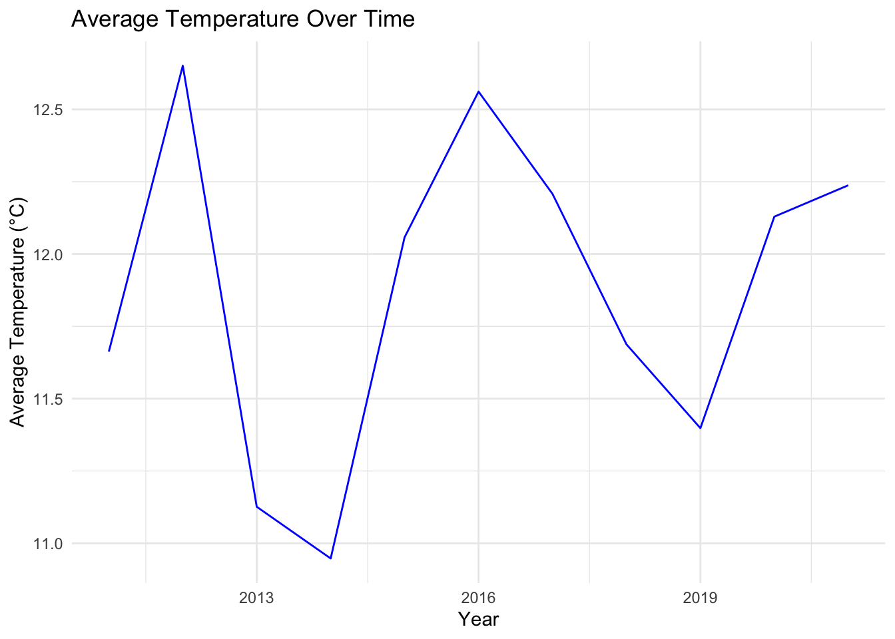
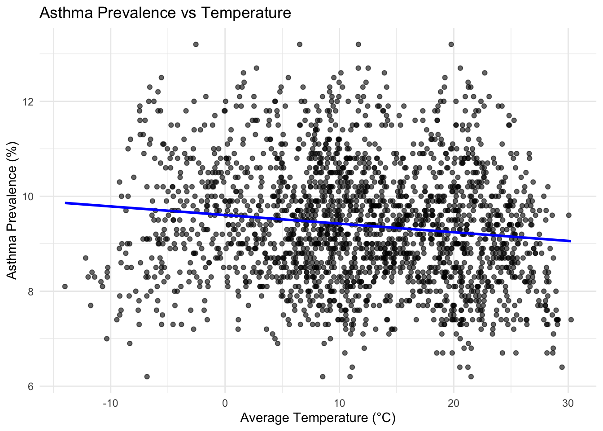

Report
Motivation
Extreme weather is on the rise due to climate change, with many, especially those who come from a lower socioeconomic background, already feeling the adverse effects changing weather patterns. Asthma is a co-morbidity for other chronic diseases and also disproportionately affects those from a lower economic status. In this project, we want to focus on asthma prevalence as hotter temperatures can lead to more pollen, air pollution, and other lung irritants. Studying these trends will help understand the health risks in vulnerable populations.
Key Questions:
- How do asthma cases correlate with temperature extremes?
- Are there temporal or spatial patterns in asthma prevalence?
- Are there other factors influence asthma prevalence?
Data
The analysis uses two primary datasets: Asthma Data and Temperature Data.
Temperature Data
To import the temperature data, we used the rnoaa library using R. We first began by defining the scope of the area we were investigating (i.e. all 50 states of the United States) and used ghcnd_stations() to randomly select 30 monitors from each state:
state_codes = c("AL", "AK", "AZ", "AR", "CA", "CO", "CT", "DE", "FL", "GA", "HI", "ID", "IL", "IN", "IA", "KS", "KY", "LA", "ME", "MD", "MA", "MI", "MN", "MS", "MO", "MT", "NE", "NV", "NH", "NJ", "NM", "NY", "NC", "ND", "OH", "OK", "OR", "PA", "RI", "SC", "SD", "TN", "TX", "UT", "VT", "VA", "WA", "WV", "WI", "WY")
state_stations = ghcnd_stations() %>%
filter(state %in% state_codes) %>%
select(id, state) %>%
group_by(state) %>%
sample_n(30) %>%
ungroup()We then defined a function that take user import for the monitor ID and state of interest and return the seasonal average from 2011 to 2021. The function uses meteo_pull_monitors() and finds the maximum and minimum temperatures from the inputted monitor ID for everyday from 1/1/2011 to 12/31/2021. If these values are available, then the daily average temperatures returned. These are found by converting to Celsius and averaging the maximum and minimum temperatures. The months are then assigned to a specific season (e.g. months 12, 1, and 2 are assigned to winter). If the max/min values are not available, the function returns NULL:
temp_func <- function(monitor_id, state) {
avg_temp <- meteo_pull_monitors(
monitors = monitor_id,
var = c("TMAX", "TMIN"),
date_min = "2011-01-01",
date_max = "2021-12-31"
)
if ("tmin" %in% colnames(avg_temp) && "tmax" %in% colnames(avg_temp)) {
avg_temp <- avg_temp %>%
mutate(
state = state,
tmin = tmin / 10,
tmax = tmax / 10,
tavg_daily = (tmin + tmax) / 2,
date = as.character(date)
) %>%
separate(date, into = c("year", "month", "day"), sep = "-") %>%
mutate(
across(c(year, month, day), as.numeric),
season = case_when(
month %in% c(12, 1, 2) ~ "Winter",
month %in% c(3, 4, 5) ~ "Spring",
month %in% c(6, 7, 8) ~ "Summer",
month %in% c(9, 10, 11) ~ "Fall"
)
) %>%
drop_na()
return(avg_temp)
} else {
return(NULL)
}
}To extract the data, plan() and future_map2() were used. This allows multiple local machines to work in tandem to reduce computation time. This was necessary as we were working with a large dataset. In this case, all available machines except one were used to execute this code. future_map2() was used to pull each station in each state to input into the temp_func() defined and described above to find the daily average. These values are then binded into one dataframe and grouped by state, year, and season to find the seasonal avarage temperature for each state in each year:
plan(multisession, workers = parallel::detectCores() - 1)
temp_data_list =
future_map2(state_stations$id,
state_stations$state,
temp_func,
.options = furrr_options(seed = TRUE))Finally, the data was saved in a .csv to be used in our analyses:
seasonal_avg_temps = bind_rows(temp_data_list) %>%
group_by(state, year, season) %>%
summarize(avg_temp = mean(tavg_daily, na.rm = TRUE))
write.csv(seasonal_avg_temps, "temp_data.csv", row.names = FALSE)Asthma Data
As mentioned, the asthma dataset was obtained from the CDC Behavioral Risk Factor Surveillance System (BRFSS) data. While initially we wanted to use data from 2001 to 2021, there was a change in weighting method in 2011 that made data collected from the previous period incomparable with data collected 2011 on wards. Therefore, for this analysis, we only use data from the 2011 to 2021 (the most recent year available) period.
For the dataset, our group used the current asthma prevalence (C) tables rather than lifetime prevalence as it captures active asthma cases during the data collection period. The variables kept were state, race, income, and prevalence percent. The prevalence percent was used as it better captured the different sample size each state had. Only data from the 50 states was used and data from territories (PR, VI, and GU) were excluded.
During the data scraping and cleaning process, we found several inconsistencies between year such as:- Different column names: for example, starting from 2016, the column for “prevalence number” in C1 data change to “weighted number”. For race data, in 2020, race designation is in column raceg while in 2021, the data is put in column race_ethnicitygcolumn.
- Missing states:For example, in 2019, the prevalence data did not include NJ while in 2021 it did not include FL.
- Superscript that is included as part of the data: For the race data, the total prevalence is listed as “U.S. totalf” in 2020 and 2021, rather than the usual “U.S. total” due to the “f” superscript.
All of these discrepancies were solved during the cleaning process.
Importing Data: since the data are located at different links, we made a function to obtain the prevalence data:
asthma_hmtl = function(url) {
df =
read_html(url) %>%
html_table() %>%
bind_rows() %>%
janitor::clean_names() %>%
select(1:4) %>%
mutate(standard_error = as.numeric(standard_error)) %>%
filter(!state %in% c("U.S. Total**", "U.S. Totalf", "Territories", "PR", "GU", "VI")) %>%
mutate(prevalence_percent = as.numeric(prevalence_percent))
}Calculating Prevalence: Using the function we defined, we calculated the prevalence in each year by state. Below is a graph that shows the distributions of asthma case by year:
#prevalence
asthma_prevalence =
tibble(
year_name = 2011:2021,
data_url = c(
"https://www.cdc.gov/asthma/brfss/2011/tableC1.htm",
"https://www.cdc.gov/asthma/brfss/2012/tableC1.htm",
"https://www.cdc.gov/asthma/brfss/2013/tableC1.htm",
"https://www.cdc.gov/asthma/brfss/2014/tableC1.htm",
"https://www.cdc.gov/asthma/brfss/2015/tableC1.htm",
"https://www.cdc.gov/asthma/brfss/2016/tableC1.htm",
"https://www.cdc.gov/asthma/brfss/2017/tableC1.htm",
"https://www.cdc.gov/asthma/brfss/2018/tableC1.html",
"https://www.cdc.gov/asthma/brfss/2019/tableC1.html",
"https://www.cdc.gov/asthma/brfss/2020/tableC1.html",
"https://www.cdc.gov/asthma/brfss/2021/tableC1.html")
) %>%
mutate(asthma_byyear = map(data_url, asthma_hmtl)) %>%
unnest(asthma_byyear) %>%
select(-data_url, -sample_size, -sample_sizec, -standard_error) %>%
group_by(year_name)Race and Income Data
A new function was developed to scrape asthma cases by race and income as they had additional columns to include in our analysis
#function 2 for race and income data
asthma_hmtl2 = function(url) {
df =
read_html(url) %>%
html_table() %>%
bind_rows() %>%
janitor::clean_names() %>%
select(1:4) %>%
filter(!state %in% c("U.S. Total**", "U.S. Totalf", "Territories", "PR", "GU", "VI")) %>%
mutate(prevalence_percent = as.numeric(prevalence_percent))
}Race
For race data, since 2021 the survey collected race and ethinicity data, the categories are slightly different. We kept the new terms, however we merged “multi” and “multirace” as the same category to help simplify the category available.
asthma_prace =
tibble(
year_name = 2011:2021,
data_url = c(
"https://www.cdc.gov/asthma/brfss/2011/tableC4.htm",
"https://www.cdc.gov/asthma/brfss/2012/tableC4.htm",
"https://www.cdc.gov/asthma/brfss/2013/tableC4.htm",
"https://www.cdc.gov/asthma/brfss/2014/tableC4.htm",
"https://www.cdc.gov/asthma/brfss/2015/tableC4.htm",
"https://www.cdc.gov/asthma/brfss/2016/tableC4.htm",
"https://www.cdc.gov/asthma/brfss/2017/tableC4.htm",
"https://www.cdc.gov/asthma/brfss/2018/tableC4.html",
"https://www.cdc.gov/asthma/brfss/2019/tableC4.html",
"https://www.cdc.gov/asthma/brfss/2020/tableC4.html",
"https://www.cdc.gov/asthma/brfss/2021/tableC4.html")
) %>%
mutate(asthma_byyear = map(data_url, asthma_hmtl2)) %>%
unnest(asthma_byyear)
asthma_prace = asthma_prace %>%
select(-data_url, -sample_size, -sample_sizec) %>%
mutate(
race = ifelse(is.na(race), raceg, race),
race = ifelse(is.na(race), race_ethnicityg, race),
race = case_when(race == "Multi" ~ "Multirace", TRUE ~ race)
) %>%
select(-raceg, -race_ethnicityg)Income Data
For the income data, in 2020 they used “-” instead of “–” and in 2021 they changed the upper limit in the range to <$25,000, $50,000 and $75,000 (instead of $24,999, $49,999 and $74,000). We merged the data by mutating the dash and the categories.
asthma_pincome =
tibble(
year_name = 2011:2021,
data_url = c(
"https://www.cdc.gov/asthma/brfss/2011/tableC7.htm",
"https://www.cdc.gov/asthma/brfss/2012/tableC7.htm",
"https://www.cdc.gov/asthma/brfss/2013/tableC7.htm",
"https://www.cdc.gov/asthma/brfss/2014/tableC7.htm",
"https://www.cdc.gov/asthma/brfss/2015/tableC7.htm",
"https://www.cdc.gov/asthma/brfss/2016/tableC7.htm",
"https://www.cdc.gov/asthma/brfss/2017/tableC7.htm",
"https://www.cdc.gov/asthma/brfss/2018/tableC7.html",
"https://www.cdc.gov/asthma/brfss/2019/tableC7.html",
"https://www.cdc.gov/asthma/brfss/2020/tableC7.html",
"https://www.cdc.gov/asthma/brfss/2021/tableC6.html")
) %>%
mutate(asthma_byyear = map(data_url, asthma_hmtl2)) %>%
unnest(asthma_byyear) %>%
select(-data_url, -sample_size, -sample_sizec) %>%
mutate(
income = case_when(income == "$15-$24,999" ~ "$15–$24,999", TRUE ~ income),
income = case_when(income == "$15,000–<$25,000" ~ "$15–$24,999", TRUE ~ income),
income = case_when(income == "$25-$49,999" ~ "$25–$49,999", TRUE ~ income),
income = case_when(income == "$25,000–<$50,000" ~ "$25–$49,999", TRUE ~ income),
income = case_when(income == "$50-$74,999" ~ "$50–$74,999", TRUE ~ income),
income = case_when(income == "$50,000–<$75,000" ~ "$50–$74,999", TRUE ~ income)
)People in the lowest income level (<$15,000) has the highest asthma prevalence across all years while people in the highest income level (>=$75,000) has the lowest prevalence. This suggest that asthma is correlated with income, which will be investigated further in our analysis.
asthma_pincome = asthma_pincome %>%
nest(income, prevalence_percent)Complete Datasets
Temperature Data
See the complete data set below:
temp_data = read_csv(file = "./temp_data.csv", show_col_types = FALSE) %>%
janitor::clean_names() %>%
drop_na()
temp_data %>%
knitr::kable(digit = 3) |>
kableExtra::kable_styling(bootstrap_options = c("striped", "hover"), font_size = 12) |>
kableExtra::scroll_box(width = "100%", height = "300px")| state | year | season | avg_temp |
|---|---|---|---|
| AK | 2011 | Fall | -2.210 |
| AK | 2011 | Spring | -1.645 |
| AK | 2011 | Summer | 11.652 |
| AK | 2011 | Winter | -12.484 |
| AK | 2012 | Fall | -3.597 |
| AK | 2012 | Spring | -2.636 |
| AK | 2012 | Summer | 12.007 |
| AK | 2012 | Winter | -17.369 |
| AK | 2013 | Fall | -0.932 |
| AK | 2013 | Spring | -4.581 |
| AK | 2013 | Summer | 13.046 |
| AK | 2013 | Winter | -13.144 |
| AK | 2014 | Fall | -0.772 |
| AK | 2014 | Spring | 3.560 |
| AK | 2014 | Summer | 12.346 |
| AK | 2014 | Winter | -7.984 |
| AK | 2015 | Fall | -1.054 |
| AK | 2015 | Spring | -0.050 |
| AK | 2015 | Summer | 12.314 |
| AK | 2015 | Winter | -13.799 |
| AK | 2016 | Fall | -0.880 |
| AK | 2016 | Spring | 1.476 |
| AK | 2016 | Summer | 13.171 |
| AK | 2016 | Winter | -11.462 |
| AK | 2017 | Fall | -0.079 |
| AK | 2017 | Spring | -2.430 |
| AK | 2017 | Summer | 12.810 |
| AK | 2017 | Winter | -11.890 |
| AK | 2018 | Fall | 1.549 |
| AK | 2018 | Spring | -0.563 |
| AK | 2018 | Summer | 12.445 |
| AK | 2018 | Winter | -11.253 |
| AK | 2019 | Fall | 0.745 |
| AK | 2019 | Spring | 2.422 |
| AK | 2019 | Summer | 13.257 |
| AK | 2019 | Winter | -11.719 |
| AK | 2020 | Fall | -0.528 |
| AK | 2020 | Spring | -1.015 |
| AK | 2020 | Summer | 12.209 |
| AK | 2020 | Winter | -15.738 |
| AK | 2021 | Fall | -2.059 |
| AK | 2021 | Spring | -2.067 |
| AK | 2021 | Summer | 12.363 |
| AK | 2021 | Winter | -12.883 |
| AL | 2011 | Fall | 17.725 |
| AL | 2011 | Spring | 18.933 |
| AL | 2011 | Summer | 28.001 |
| AL | 2011 | Winter | 8.922 |
| AL | 2012 | Fall | 17.516 |
| AL | 2012 | Spring | 20.289 |
| AL | 2012 | Summer | 26.358 |
| AL | 2012 | Winter | 11.498 |
| AL | 2013 | Fall | 18.667 |
| AL | 2013 | Spring | 16.149 |
| AL | 2013 | Summer | 25.964 |
| AL | 2013 | Winter | 10.458 |
| AL | 2014 | Fall | 18.072 |
| AL | 2014 | Spring | 16.973 |
| AL | 2014 | Summer | 26.302 |
| AL | 2014 | Winter | 8.048 |
| AL | 2015 | Fall | 20.051 |
| AL | 2015 | Spring | 19.574 |
| AL | 2015 | Summer | 27.232 |
| AL | 2015 | Winter | 9.639 |
| AL | 2016 | Fall | 20.782 |
| AL | 2016 | Spring | 18.970 |
| AL | 2016 | Summer | 27.705 |
| AL | 2016 | Winter | 9.957 |
| AL | 2017 | Fall | 20.160 |
| AL | 2017 | Spring | 19.255 |
| AL | 2017 | Summer | 26.588 |
| AL | 2017 | Winter | 12.010 |
| AL | 2018 | Fall | 19.813 |
| AL | 2018 | Spring | 18.271 |
| AL | 2018 | Summer | 27.485 |
| AL | 2018 | Winter | 9.957 |
| AL | 2019 | Fall | 20.003 |
| AL | 2019 | Spring | 19.418 |
| AL | 2019 | Summer | 27.286 |
| AL | 2019 | Winter | 11.545 |
| AL | 2020 | Fall | 20.095 |
| AL | 2020 | Spring | 19.791 |
| AL | 2020 | Summer | 26.820 |
| AL | 2020 | Winter | 9.887 |
| AL | 2021 | Fall | 18.902 |
| AL | 2021 | Spring | 18.273 |
| AL | 2021 | Summer | 26.674 |
| AL | 2021 | Winter | 10.776 |
| AR | 2011 | Fall | 16.099 |
| AR | 2011 | Spring | 15.863 |
| AR | 2011 | Summer | 28.391 |
| AR | 2011 | Winter | 4.671 |
| AR | 2012 | Fall | 15.829 |
| AR | 2012 | Spring | 19.277 |
| AR | 2012 | Summer | 27.155 |
| AR | 2012 | Winter | 7.335 |
| AR | 2013 | Fall | 16.072 |
| AR | 2013 | Spring | 13.801 |
| AR | 2013 | Summer | 25.435 |
| AR | 2013 | Winter | 4.601 |
| AR | 2014 | Fall | 15.571 |
| AR | 2014 | Spring | 14.286 |
| AR | 2014 | Summer | 25.072 |
| AR | 2014 | Winter | 3.235 |
| AR | 2015 | Fall | 17.357 |
| AR | 2015 | Spring | 15.419 |
| AR | 2015 | Summer | 26.287 |
| AR | 2015 | Winter | 4.670 |
| AR | 2016 | Fall | 18.753 |
| AR | 2016 | Spring | 16.020 |
| AR | 2016 | Summer | 26.892 |
| AR | 2016 | Winter | 5.033 |
| AR | 2017 | Fall | 17.020 |
| AR | 2017 | Spring | 16.637 |
| AR | 2017 | Summer | 25.377 |
| AR | 2017 | Winter | 6.813 |
| AR | 2018 | Fall | 15.680 |
| AR | 2018 | Spring | 15.922 |
| AR | 2018 | Summer | 26.823 |
| AR | 2018 | Winter | 4.533 |
| AR | 2019 | Fall | 16.338 |
| AR | 2019 | Spring | 15.341 |
| AR | 2019 | Summer | 25.714 |
| AR | 2019 | Winter | 5.856 |
| AR | 2020 | Fall | 16.257 |
| AR | 2020 | Spring | 15.699 |
| AR | 2020 | Summer | 26.046 |
| AR | 2020 | Winter | 5.861 |
| AR | 2021 | Fall | 17.099 |
| AR | 2021 | Spring | 15.365 |
| AR | 2021 | Summer | 26.093 |
| AR | 2021 | Winter | 5.442 |
| AZ | 2011 | Fall | 17.604 |
| AZ | 2011 | Spring | 15.665 |
| AZ | 2011 | Summer | 27.484 |
| AZ | 2011 | Winter | 5.701 |
| AZ | 2012 | Fall | 18.558 |
| AZ | 2012 | Spring | 16.396 |
| AZ | 2012 | Summer | 27.506 |
| AZ | 2012 | Winter | 7.400 |
| AZ | 2013 | Fall | 16.862 |
| AZ | 2013 | Spring | 16.644 |
| AZ | 2013 | Summer | 27.389 |
| AZ | 2013 | Winter | 5.451 |
| AZ | 2014 | Fall | 18.096 |
| AZ | 2014 | Spring | 16.262 |
| AZ | 2014 | Summer | 26.815 |
| AZ | 2014 | Winter | 8.944 |
| AZ | 2015 | Fall | 17.843 |
| AZ | 2015 | Spring | 15.982 |
| AZ | 2015 | Summer | 27.349 |
| AZ | 2015 | Winter | 8.189 |
| AZ | 2016 | Fall | 17.952 |
| AZ | 2016 | Spring | 15.750 |
| AZ | 2016 | Summer | 27.102 |
| AZ | 2016 | Winter | 8.241 |
| AZ | 2017 | Fall | 19.121 |
| AZ | 2017 | Spring | 16.233 |
| AZ | 2017 | Summer | 27.493 |
| AZ | 2017 | Winter | 8.378 |
| AZ | 2018 | Fall | 17.386 |
| AZ | 2018 | Spring | 17.042 |
| AZ | 2018 | Summer | 27.532 |
| AZ | 2018 | Winter | 8.402 |
| AZ | 2019 | Fall | 17.503 |
| AZ | 2019 | Spring | 14.899 |
| AZ | 2019 | Summer | 26.810 |
| AZ | 2019 | Winter | 6.492 |
| AZ | 2020 | Fall | 18.930 |
| AZ | 2020 | Spring | 16.167 |
| AZ | 2020 | Summer | 27.944 |
| AZ | 2020 | Winter | 7.179 |
| AZ | 2021 | Fall | 18.147 |
| AZ | 2021 | Spring | 16.015 |
| AZ | 2021 | Summer | 27.529 |
| AZ | 2021 | Winter | 7.929 |
| CA | 2011 | Fall | 16.938 |
| CA | 2011 | Spring | 13.207 |
| CA | 2011 | Summer | 21.571 |
| CA | 2011 | Winter | 8.342 |
| CA | 2012 | Fall | 17.877 |
| CA | 2012 | Spring | 14.737 |
| CA | 2012 | Summer | 22.580 |
| CA | 2012 | Winter | 9.687 |
| CA | 2013 | Fall | 16.687 |
| CA | 2013 | Spring | 15.930 |
| CA | 2013 | Summer | 23.219 |
| CA | 2013 | Winter | 8.395 |
| CA | 2014 | Fall | 18.430 |
| CA | 2014 | Spring | 16.073 |
| CA | 2014 | Summer | 23.239 |
| CA | 2014 | Winter | 11.281 |
| CA | 2015 | Fall | 17.711 |
| CA | 2015 | Spring | 15.494 |
| CA | 2015 | Summer | 23.244 |
| CA | 2015 | Winter | 10.354 |
| CA | 2016 | Fall | 17.051 |
| CA | 2016 | Spring | 15.053 |
| CA | 2016 | Summer | 23.158 |
| CA | 2016 | Winter | 10.017 |
| CA | 2017 | Fall | 17.819 |
| CA | 2017 | Spring | 15.182 |
| CA | 2017 | Summer | 23.873 |
| CA | 2017 | Winter | 9.590 |
| CA | 2018 | Fall | 17.527 |
| CA | 2018 | Spring | 14.732 |
| CA | 2018 | Summer | 23.601 |
| CA | 2018 | Winter | 10.332 |
| CA | 2019 | Fall | 17.069 |
| CA | 2019 | Spring | 14.361 |
| CA | 2019 | Summer | 22.974 |
| CA | 2019 | Winter | 9.088 |
| CA | 2020 | Fall | 18.355 |
| CA | 2020 | Spring | 14.930 |
| CA | 2020 | Summer | 23.404 |
| CA | 2020 | Winter | 10.142 |
| CA | 2021 | Fall | 17.528 |
| CA | 2021 | Spring | 14.601 |
| CA | 2021 | Summer | 24.020 |
| CA | 2021 | Winter | 9.769 |
| CO | 2011 | Fall | 6.532 |
| CO | 2011 | Spring | 4.024 |
| CO | 2011 | Summer | 17.516 |
| CO | 2011 | Winter | -5.941 |
| CO | 2012 | Fall | 7.144 |
| CO | 2012 | Spring | 6.581 |
| CO | 2012 | Summer | 17.906 |
| CO | 2012 | Winter | -4.033 |
| CO | 2013 | Fall | 6.919 |
| CO | 2013 | Spring | 4.323 |
| CO | 2013 | Summer | 17.620 |
| CO | 2013 | Winter | -4.390 |
| CO | 2014 | Fall | 7.866 |
| CO | 2014 | Spring | 5.088 |
| CO | 2014 | Summer | 17.113 |
| CO | 2014 | Winter | -3.103 |
| CO | 2015 | Fall | 8.780 |
| CO | 2015 | Spring | 5.759 |
| CO | 2015 | Summer | 17.622 |
| CO | 2015 | Winter | -2.314 |
| CO | 2016 | Fall | 9.405 |
| CO | 2016 | Spring | 5.213 |
| CO | 2016 | Summer | 18.120 |
| CO | 2016 | Winter | -2.393 |
| CO | 2017 | Fall | 8.921 |
| CO | 2017 | Spring | 7.177 |
| CO | 2017 | Summer | 18.370 |
| CO | 2017 | Winter | -1.113 |
| CO | 2018 | Fall | 6.909 |
| CO | 2018 | Spring | 6.622 |
| CO | 2018 | Summer | 18.526 |
| CO | 2018 | Winter | -2.881 |
| CO | 2019 | Fall | 6.709 |
| CO | 2019 | Spring | 4.219 |
| CO | 2019 | Summer | 17.537 |
| CO | 2019 | Winter | -3.866 |
| CO | 2020 | Fall | 7.722 |
| CO | 2020 | Spring | 6.112 |
| CO | 2020 | Summer | 18.665 |
| CO | 2020 | Winter | -3.633 |
| CO | 2021 | Fall | 9.089 |
| CO | 2021 | Spring | 4.728 |
| CO | 2021 | Summer | 18.433 |
| CO | 2021 | Winter | -3.082 |
| CT | 2011 | Fall | 13.301 |
| CT | 2011 | Spring | 9.396 |
| CT | 2011 | Summer | 21.842 |
| CT | 2011 | Winter | -1.336 |
| CT | 2012 | Fall | 11.495 |
| CT | 2012 | Spring | 11.398 |
| CT | 2012 | Summer | 22.033 |
| CT | 2012 | Winter | 1.435 |
| CT | 2013 | Fall | 11.213 |
| CT | 2013 | Spring | 8.640 |
| CT | 2013 | Summer | 22.051 |
| CT | 2013 | Winter | -1.087 |
| CT | 2014 | Fall | 12.196 |
| CT | 2014 | Spring | 7.181 |
| CT | 2014 | Summer | 21.314 |
| CT | 2014 | Winter | -2.044 |
| CT | 2015 | Fall | 13.192 |
| CT | 2015 | Spring | 8.310 |
| CT | 2015 | Summer | 21.515 |
| CT | 2015 | Winter | -1.809 |
| CT | 2016 | Fall | 12.942 |
| CT | 2016 | Spring | 9.770 |
| CT | 2016 | Summer | 22.401 |
| CT | 2016 | Winter | -0.023 |
| CT | 2017 | Fall | 13.341 |
| CT | 2017 | Spring | 8.660 |
| CT | 2017 | Summer | 20.984 |
| CT | 2017 | Winter | 0.227 |
| CT | 2018 | Fall | 12.106 |
| CT | 2018 | Spring | 9.208 |
| CT | 2018 | Summer | 22.375 |
| CT | 2018 | Winter | -0.080 |
| CT | 2019 | Fall | 11.763 |
| CT | 2019 | Spring | 8.939 |
| CT | 2019 | Summer | 22.093 |
| CT | 2019 | Winter | -0.609 |
| CT | 2020 | Fall | 12.831 |
| CT | 2020 | Spring | 8.960 |
| CT | 2020 | Summer | 22.730 |
| CT | 2020 | Winter | 1.423 |
| CT | 2021 | Fall | 13.263 |
| CT | 2021 | Spring | 9.498 |
| CT | 2021 | Summer | 22.120 |
| CT | 2021 | Winter | 0.167 |
| DE | 2011 | Fall | 14.833 |
| DE | 2011 | Spring | 12.808 |
| DE | 2011 | Summer | 24.703 |
| DE | 2011 | Winter | 2.045 |
| DE | 2012 | Fall | 13.569 |
| DE | 2012 | Spring | 14.076 |
| DE | 2012 | Summer | 24.549 |
| DE | 2012 | Winter | 4.473 |
| DE | 2013 | Fall | 13.734 |
| DE | 2013 | Spring | 11.512 |
| DE | 2013 | Summer | 24.121 |
| DE | 2013 | Winter | 2.486 |
| DE | 2014 | Fall | 13.959 |
| DE | 2014 | Spring | 11.034 |
| DE | 2014 | Summer | 23.211 |
| DE | 2014 | Winter | 0.858 |
| DE | 2015 | Fall | 15.358 |
| DE | 2015 | Spring | 11.845 |
| DE | 2015 | Summer | 23.999 |
| DE | 2015 | Winter | 1.507 |
| DE | 2016 | Fall | 15.438 |
| DE | 2016 | Spring | 12.420 |
| DE | 2016 | Summer | 24.975 |
| DE | 2016 | Winter | 1.998 |
| DE | 2017 | Fall | 15.307 |
| DE | 2017 | Spring | 12.257 |
| DE | 2017 | Summer | 23.902 |
| DE | 2017 | Winter | 3.562 |
| DE | 2018 | Fall | 14.431 |
| DE | 2018 | Spring | 11.337 |
| DE | 2018 | Summer | 24.501 |
| DE | 2018 | Winter | 2.832 |
| DE | 2019 | Fall | 14.550 |
| DE | 2019 | Spring | 12.962 |
| DE | 2019 | Summer | 24.829 |
| DE | 2019 | Winter | 2.193 |
| DE | 2020 | Fall | 14.670 |
| DE | 2020 | Spring | 11.719 |
| DE | 2020 | Summer | 24.653 |
| DE | 2020 | Winter | 3.728 |
| DE | 2021 | Fall | 14.877 |
| DE | 2021 | Spring | 12.390 |
| DE | 2021 | Summer | 24.528 |
| DE | 2021 | Winter | 2.916 |
| FL | 2011 | Fall | 24.154 |
| FL | 2011 | Spring | 23.357 |
| FL | 2011 | Summer | 28.263 |
| FL | 2011 | Winter | 18.330 |
| FL | 2012 | Fall | 23.780 |
| FL | 2012 | Spring | 23.693 |
| FL | 2012 | Summer | 27.611 |
| FL | 2012 | Winter | 18.859 |
| FL | 2013 | Fall | 25.129 |
| FL | 2013 | Spring | 21.489 |
| FL | 2013 | Summer | 27.784 |
| FL | 2013 | Winter | 20.032 |
| FL | 2014 | Fall | 23.903 |
| FL | 2014 | Spring | 22.872 |
| FL | 2014 | Summer | 28.200 |
| FL | 2014 | Winter | 18.618 |
| FL | 2015 | Fall | 25.577 |
| FL | 2015 | Spring | 25.122 |
| FL | 2015 | Summer | 28.319 |
| FL | 2015 | Winter | 18.764 |
| FL | 2016 | Fall | 24.498 |
| FL | 2016 | Spring | 23.173 |
| FL | 2016 | Summer | 28.676 |
| FL | 2016 | Winter | 17.803 |
| FL | 2017 | Fall | 24.637 |
| FL | 2017 | Spring | 23.176 |
| FL | 2017 | Summer | 28.225 |
| FL | 2017 | Winter | 19.455 |
| FL | 2018 | Fall | 25.536 |
| FL | 2018 | Spring | 22.324 |
| FL | 2018 | Summer | 28.175 |
| FL | 2018 | Winter | 18.695 |
| FL | 2019 | Fall | 25.514 |
| FL | 2019 | Spring | 23.515 |
| FL | 2019 | Summer | 28.456 |
| FL | 2019 | Winter | 19.334 |
| FL | 2020 | Fall | 25.651 |
| FL | 2020 | Spring | 23.754 |
| FL | 2020 | Summer | 28.309 |
| FL | 2020 | Winter | 17.961 |
| FL | 2021 | Fall | 24.441 |
| FL | 2021 | Spring | 22.906 |
| FL | 2021 | Summer | 28.012 |
| FL | 2021 | Winter | 19.087 |
| GA | 2011 | Fall | 18.212 |
| GA | 2011 | Spring | 18.728 |
| GA | 2011 | Summer | 28.426 |
| GA | 2011 | Winter | 9.214 |
| GA | 2012 | Fall | 18.273 |
| GA | 2012 | Spring | 20.311 |
| GA | 2012 | Summer | 26.469 |
| GA | 2012 | Winter | 11.206 |
| GA | 2013 | Fall | 19.061 |
| GA | 2013 | Spring | 16.055 |
| GA | 2013 | Summer | 26.257 |
| GA | 2013 | Winter | 11.202 |
| GA | 2014 | Fall | 18.062 |
| GA | 2014 | Spring | 17.765 |
| GA | 2014 | Summer | 26.995 |
| GA | 2014 | Winter | 9.281 |
| GA | 2015 | Fall | 19.005 |
| GA | 2015 | Spring | 19.608 |
| GA | 2015 | Summer | 27.435 |
| GA | 2015 | Winter | 9.864 |
| GA | 2016 | Fall | 19.015 |
| GA | 2016 | Spring | 18.335 |
| GA | 2016 | Summer | 28.150 |
| GA | 2016 | Winter | 9.196 |
| GA | 2017 | Fall | 19.102 |
| GA | 2017 | Spring | 18.680 |
| GA | 2017 | Summer | 26.479 |
| GA | 2017 | Winter | 11.929 |
| GA | 2018 | Fall | 20.043 |
| GA | 2018 | Spring | 17.776 |
| GA | 2018 | Summer | 27.199 |
| GA | 2018 | Winter | 10.699 |
| GA | 2019 | Fall | 20.313 |
| GA | 2019 | Spring | 19.048 |
| GA | 2019 | Summer | 27.690 |
| GA | 2019 | Winter | 11.212 |
| GA | 2020 | Fall | 20.332 |
| GA | 2020 | Spring | 19.076 |
| GA | 2020 | Summer | 27.596 |
| GA | 2020 | Winter | 10.421 |
| GA | 2021 | Fall | 18.574 |
| GA | 2021 | Spring | 18.048 |
| GA | 2021 | Summer | 26.976 |
| GA | 2021 | Winter | 11.302 |
| HI | 2011 | Fall | 23.659 |
| HI | 2011 | Spring | 22.823 |
| HI | 2011 | Summer | 24.070 |
| HI | 2011 | Winter | 21.647 |
| HI | 2012 | Fall | 24.008 |
| HI | 2012 | Spring | 22.657 |
| HI | 2012 | Summer | 24.201 |
| HI | 2012 | Winter | 22.201 |
| HI | 2013 | Fall | 24.580 |
| HI | 2013 | Spring | 22.561 |
| HI | 2013 | Summer | 24.788 |
| HI | 2013 | Winter | 21.876 |
| HI | 2014 | Fall | 24.902 |
| HI | 2014 | Spring | 22.489 |
| HI | 2014 | Summer | 24.641 |
| HI | 2014 | Winter | 21.854 |
| HI | 2015 | Fall | 25.421 |
| HI | 2015 | Spring | 22.679 |
| HI | 2015 | Summer | 25.656 |
| HI | 2015 | Winter | 22.582 |
| HI | 2016 | Fall | 24.457 |
| HI | 2016 | Spring | 23.132 |
| HI | 2016 | Summer | 25.042 |
| HI | 2016 | Winter | 22.158 |
| HI | 2017 | Fall | 24.284 |
| HI | 2017 | Spring | 23.242 |
| HI | 2017 | Summer | 25.856 |
| HI | 2017 | Winter | 21.173 |
| HI | 2018 | Fall | 24.709 |
| HI | 2018 | Spring | 22.868 |
| HI | 2018 | Summer | 25.247 |
| HI | 2018 | Winter | 22.135 |
| HI | 2019 | Fall | 26.032 |
| HI | 2019 | Spring | 22.824 |
| HI | 2019 | Summer | 26.189 |
| HI | 2019 | Winter | 22.162 |
| HI | 2020 | Fall | 25.638 |
| HI | 2020 | Spring | 23.497 |
| HI | 2020 | Summer | 25.802 |
| HI | 2020 | Winter | 23.144 |
| HI | 2021 | Fall | 24.710 |
| HI | 2021 | Spring | 23.325 |
| HI | 2021 | Summer | 25.903 |
| HI | 2021 | Winter | 22.449 |
| IA | 2011 | Fall | 10.715 |
| IA | 2011 | Spring | 8.704 |
| IA | 2011 | Summer | 23.398 |
| IA | 2011 | Winter | -5.258 |
| IA | 2012 | Fall | 10.284 |
| IA | 2012 | Spring | 13.505 |
| IA | 2012 | Summer | 23.846 |
| IA | 2012 | Winter | -2.154 |
| IA | 2013 | Fall | 10.913 |
| IA | 2013 | Spring | 6.803 |
| IA | 2013 | Summer | 22.179 |
| IA | 2013 | Winter | -5.879 |
| IA | 2014 | Fall | 8.996 |
| IA | 2014 | Spring | 7.734 |
| IA | 2014 | Summer | 21.685 |
| IA | 2014 | Winter | -7.289 |
| IA | 2015 | Fall | 12.822 |
| IA | 2015 | Spring | 9.973 |
| IA | 2015 | Summer | 21.829 |
| IA | 2015 | Winter | -4.502 |
| IA | 2016 | Fall | 13.693 |
| IA | 2016 | Spring | 10.642 |
| IA | 2016 | Summer | 23.036 |
| IA | 2016 | Winter | -4.516 |
| IA | 2017 | Fall | 11.326 |
| IA | 2017 | Spring | 9.705 |
| IA | 2017 | Summer | 22.251 |
| IA | 2017 | Winter | -2.396 |
| IA | 2018 | Fall | 9.031 |
| IA | 2018 | Spring | 8.743 |
| IA | 2018 | Summer | 23.074 |
| IA | 2018 | Winter | -4.958 |
| IA | 2019 | Fall | 9.865 |
| IA | 2019 | Spring | 7.775 |
| IA | 2019 | Summer | 22.263 |
| IA | 2019 | Winter | -5.959 |
| IA | 2020 | Fall | 10.090 |
| IA | 2020 | Spring | 9.152 |
| IA | 2020 | Summer | 23.315 |
| IA | 2020 | Winter | -3.830 |
| IA | 2021 | Fall | 12.363 |
| IA | 2021 | Spring | 10.284 |
| IA | 2021 | Summer | 23.242 |
| IA | 2021 | Winter | -4.938 |
| ID | 2011 | Fall | 8.280 |
| ID | 2011 | Spring | 5.136 |
| ID | 2011 | Summer | 17.699 |
| ID | 2011 | Winter | -3.668 |
| ID | 2012 | Fall | 8.721 |
| ID | 2012 | Spring | 7.421 |
| ID | 2012 | Summer | 18.932 |
| ID | 2012 | Winter | -1.906 |
| ID | 2013 | Fall | 7.817 |
| ID | 2013 | Spring | 6.619 |
| ID | 2013 | Summer | 19.668 |
| ID | 2013 | Winter | -4.995 |
| ID | 2014 | Fall | 8.529 |
| ID | 2014 | Spring | 7.149 |
| ID | 2014 | Summer | 18.587 |
| ID | 2014 | Winter | -1.648 |
| ID | 2015 | Fall | 8.789 |
| ID | 2015 | Spring | 8.506 |
| ID | 2015 | Summer | 19.587 |
| ID | 2015 | Winter | -1.433 |
| ID | 2016 | Fall | 8.925 |
| ID | 2016 | Spring | 8.672 |
| ID | 2016 | Summer | 18.656 |
| ID | 2016 | Winter | -3.478 |
| ID | 2017 | Fall | 7.614 |
| ID | 2017 | Spring | 7.382 |
| ID | 2017 | Summer | 19.842 |
| ID | 2017 | Winter | -4.482 |
| ID | 2018 | Fall | 7.123 |
| ID | 2018 | Spring | 7.523 |
| ID | 2018 | Summer | 18.521 |
| ID | 2018 | Winter | -2.130 |
| ID | 2019 | Fall | 6.212 |
| ID | 2019 | Spring | 6.213 |
| ID | 2019 | Summer | 18.210 |
| ID | 2019 | Winter | -3.627 |
| ID | 2020 | Fall | 8.426 |
| ID | 2020 | Spring | 7.099 |
| ID | 2020 | Summer | 18.301 |
| ID | 2020 | Winter | -2.656 |
| ID | 2021 | Fall | 8.940 |
| ID | 2021 | Spring | 6.898 |
| ID | 2021 | Summer | 20.659 |
| ID | 2021 | Winter | -2.105 |
| IL | 2011 | Fall | 11.419 |
| IL | 2011 | Spring | 10.228 |
| IL | 2011 | Summer | 23.956 |
| IL | 2011 | Winter | -2.289 |
| IL | 2012 | Fall | 10.713 |
| IL | 2012 | Spring | 13.839 |
| IL | 2012 | Summer | 24.003 |
| IL | 2012 | Winter | -0.213 |
| IL | 2013 | Fall | 11.114 |
| IL | 2013 | Spring | 8.350 |
| IL | 2013 | Summer | 21.985 |
| IL | 2013 | Winter | -4.061 |
| IL | 2014 | Fall | 9.854 |
| IL | 2014 | Spring | 8.594 |
| IL | 2014 | Summer | 22.110 |
| IL | 2014 | Winter | -6.158 |
| IL | 2015 | Fall | 13.430 |
| IL | 2015 | Spring | 10.217 |
| IL | 2015 | Summer | 21.848 |
| IL | 2015 | Winter | -3.252 |
| IL | 2016 | Fall | 14.692 |
| IL | 2016 | Spring | 11.090 |
| IL | 2016 | Summer | 23.831 |
| IL | 2016 | Winter | -2.704 |
| IL | 2017 | Fall | 12.943 |
| IL | 2017 | Spring | 10.758 |
| IL | 2017 | Summer | 22.312 |
| IL | 2017 | Winter | -0.440 |
| IL | 2018 | Fall | 10.814 |
| IL | 2018 | Spring | 9.305 |
| IL | 2018 | Summer | 23.171 |
| IL | 2018 | Winter | -2.757 |
| IL | 2019 | Fall | 11.103 |
| IL | 2019 | Spring | 8.840 |
| IL | 2019 | Summer | 22.659 |
| IL | 2019 | Winter | -3.003 |
| IL | 2020 | Fall | 12.081 |
| IL | 2020 | Spring | 9.827 |
| IL | 2020 | Summer | 23.333 |
| IL | 2020 | Winter | -1.289 |
| IL | 2021 | Fall | 13.174 |
| IL | 2021 | Spring | 10.915 |
| IL | 2021 | Summer | 23.447 |
| IL | 2021 | Winter | -2.494 |
| IN | 2011 | Fall | 12.601 |
| IN | 2011 | Spring | 10.787 |
| IN | 2011 | Summer | 23.796 |
| IN | 2011 | Winter | -1.671 |
| IN | 2012 | Fall | 11.083 |
| IN | 2012 | Spring | 14.673 |
| IN | 2012 | Summer | 23.914 |
| IN | 2012 | Winter | 1.121 |
| IN | 2013 | Fall | 11.838 |
| IN | 2013 | Spring | 9.917 |
| IN | 2013 | Summer | 22.062 |
| IN | 2013 | Winter | -1.708 |
| IN | 2014 | Fall | 10.425 |
| IN | 2014 | Spring | 9.453 |
| IN | 2014 | Summer | 21.776 |
| IN | 2014 | Winter | -4.345 |
| IN | 2015 | Fall | 13.953 |
| IN | 2015 | Spring | 10.674 |
| IN | 2015 | Summer | 21.888 |
| IN | 2015 | Winter | -1.984 |
| IN | 2016 | Fall | 14.884 |
| IN | 2016 | Spring | 11.659 |
| IN | 2016 | Summer | 23.526 |
| IN | 2016 | Winter | -1.341 |
| IN | 2017 | Fall | 13.262 |
| IN | 2017 | Spring | 11.799 |
| IN | 2017 | Summer | 22.095 |
| IN | 2017 | Winter | 1.209 |
| IN | 2018 | Fall | 12.238 |
| IN | 2018 | Spring | 10.390 |
| IN | 2018 | Summer | 23.302 |
| IN | 2018 | Winter | -0.548 |
| IN | 2019 | Fall | 12.296 |
| IN | 2019 | Spring | 10.143 |
| IN | 2019 | Summer | 22.749 |
| IN | 2019 | Winter | -0.556 |
| IN | 2020 | Fall | 12.494 |
| IN | 2020 | Spring | 10.135 |
| IN | 2020 | Summer | 23.024 |
| IN | 2020 | Winter | 0.519 |
| IN | 2021 | Fall | 13.186 |
| IN | 2021 | Spring | 11.108 |
| IN | 2021 | Summer | 23.194 |
| IN | 2021 | Winter | -0.591 |
| KS | 2011 | Fall | 13.072 |
| KS | 2011 | Spring | 11.216 |
| KS | 2011 | Summer | 26.209 |
| KS | 2011 | Winter | -2.340 |
| KS | 2012 | Fall | 13.122 |
| KS | 2012 | Spring | 16.263 |
| KS | 2012 | Summer | 26.150 |
| KS | 2012 | Winter | 1.410 |
| KS | 2013 | Fall | 13.181 |
| KS | 2013 | Spring | 9.478 |
| KS | 2013 | Summer | 24.037 |
| KS | 2013 | Winter | -1.026 |
| KS | 2014 | Fall | 11.882 |
| KS | 2014 | Spring | 11.215 |
| KS | 2014 | Summer | 24.004 |
| KS | 2014 | Winter | -1.962 |
| KS | 2015 | Fall | 15.029 |
| KS | 2015 | Spring | 11.969 |
| KS | 2015 | Summer | 24.084 |
| KS | 2015 | Winter | -0.170 |
| KS | 2016 | Fall | 15.362 |
| KS | 2016 | Spring | 12.501 |
| KS | 2016 | Summer | 25.108 |
| KS | 2016 | Winter | -0.090 |
| KS | 2017 | Fall | 13.631 |
| KS | 2017 | Spring | 11.712 |
| KS | 2017 | Summer | 24.183 |
| KS | 2017 | Winter | 0.964 |
| KS | 2018 | Fall | 11.299 |
| KS | 2018 | Spring | 11.562 |
| KS | 2018 | Summer | 24.776 |
| KS | 2018 | Winter | -1.483 |
| KS | 2019 | Fall | 12.311 |
| KS | 2019 | Spring | 9.900 |
| KS | 2019 | Summer | 24.076 |
| KS | 2019 | Winter | -1.463 |
| KS | 2020 | Fall | 12.891 |
| KS | 2020 | Spring | 11.402 |
| KS | 2020 | Summer | 24.994 |
| KS | 2020 | Winter | 0.621 |
| KS | 2021 | Fall | 14.273 |
| KS | 2021 | Spring | 11.999 |
| KS | 2021 | Summer | 25.081 |
| KS | 2021 | Winter | 0.013 |
| KY | 2011 | Fall | 14.290 |
| KY | 2011 | Spring | 13.118 |
| KY | 2011 | Summer | 24.871 |
| KY | 2011 | Winter | 1.724 |
| KY | 2012 | Fall | 13.495 |
| KY | 2012 | Spring | 17.174 |
| KY | 2012 | Summer | 24.992 |
| KY | 2012 | Winter | 5.735 |
| KY | 2013 | Fall | 14.688 |
| KY | 2013 | Spring | 12.427 |
| KY | 2013 | Summer | 23.314 |
| KY | 2013 | Winter | 3.331 |
| KY | 2014 | Fall | 14.036 |
| KY | 2014 | Spring | 12.958 |
| KY | 2014 | Summer | 23.585 |
| KY | 2014 | Winter | 0.768 |
| KY | 2015 | Fall | 17.120 |
| KY | 2015 | Spring | 13.780 |
| KY | 2015 | Summer | 23.761 |
| KY | 2015 | Winter | 0.926 |
| KY | 2016 | Fall | 18.537 |
| KY | 2016 | Spring | 15.967 |
| KY | 2016 | Summer | 25.658 |
| KY | 2016 | Winter | 2.921 |
| KY | 2017 | Fall | 15.552 |
| KY | 2017 | Spring | 14.215 |
| KY | 2017 | Summer | 23.883 |
| KY | 2017 | Winter | 5.548 |
| KY | 2018 | Fall | 15.557 |
| KY | 2018 | Spring | 13.985 |
| KY | 2018 | Summer | 24.943 |
| KY | 2018 | Winter | 3.042 |
| KY | 2019 | Fall | 15.739 |
| KY | 2019 | Spring | 13.790 |
| KY | 2019 | Summer | 24.670 |
| KY | 2019 | Winter | 4.520 |
| KY | 2020 | Fall | 15.561 |
| KY | 2020 | Spring | 13.798 |
| KY | 2020 | Summer | 25.094 |
| KY | 2020 | Winter | 3.960 |
| KY | 2021 | Fall | 15.051 |
| KY | 2021 | Spring | 12.477 |
| KY | 2021 | Summer | 24.330 |
| KY | 2021 | Winter | 1.824 |
| LA | 2011 | Fall | 20.419 |
| LA | 2011 | Spring | 20.762 |
| LA | 2011 | Summer | 29.983 |
| LA | 2011 | Winter | 10.458 |
| LA | 2012 | Fall | 20.279 |
| LA | 2012 | Spring | 21.927 |
| LA | 2012 | Summer | 27.917 |
| LA | 2012 | Winter | 13.539 |
| LA | 2013 | Fall | 20.994 |
| LA | 2013 | Spring | 18.059 |
| LA | 2013 | Summer | 27.947 |
| LA | 2013 | Winter | 11.810 |
| LA | 2014 | Fall | 21.343 |
| LA | 2014 | Spring | 18.733 |
| LA | 2014 | Summer | 27.774 |
| LA | 2014 | Winter | 10.627 |
| LA | 2015 | Fall | 22.321 |
| LA | 2015 | Spring | 21.066 |
| LA | 2015 | Summer | 28.788 |
| LA | 2015 | Winter | 11.943 |
| LA | 2016 | Fall | 23.397 |
| LA | 2016 | Spring | 21.387 |
| LA | 2016 | Summer | 29.046 |
| LA | 2016 | Winter | 12.940 |
| LA | 2017 | Fall | 22.155 |
| LA | 2017 | Spring | 21.299 |
| LA | 2017 | Summer | 27.993 |
| LA | 2017 | Winter | 14.551 |
| LA | 2018 | Fall | 22.088 |
| LA | 2018 | Spring | 21.302 |
| LA | 2018 | Summer | 29.102 |
| LA | 2018 | Winter | 12.478 |
| LA | 2019 | Fall | 21.832 |
| LA | 2019 | Spring | 20.195 |
| LA | 2019 | Summer | 28.767 |
| LA | 2019 | Winter | 13.528 |
| LA | 2020 | Fall | 21.919 |
| LA | 2020 | Spring | 21.867 |
| LA | 2020 | Summer | 28.706 |
| LA | 2020 | Winter | 13.291 |
| LA | 2021 | Fall | 21.409 |
| LA | 2021 | Spring | 20.257 |
| LA | 2021 | Summer | 28.831 |
| LA | 2021 | Winter | 12.795 |
| MA | 2011 | Fall | 13.111 |
| MA | 2011 | Spring | 8.841 |
| MA | 2011 | Summer | 21.194 |
| MA | 2011 | Winter | -1.053 |
| MA | 2012 | Fall | 11.564 |
| MA | 2012 | Spring | 10.627 |
| MA | 2012 | Summer | 21.494 |
| MA | 2012 | Winter | 1.425 |
| MA | 2013 | Fall | 11.056 |
| MA | 2013 | Spring | 8.367 |
| MA | 2013 | Summer | 21.641 |
| MA | 2013 | Winter | -1.204 |
| MA | 2014 | Fall | 11.542 |
| MA | 2014 | Spring | 6.904 |
| MA | 2014 | Summer | 20.686 |
| MA | 2014 | Winter | -1.417 |
| MA | 2015 | Fall | 12.503 |
| MA | 2015 | Spring | 7.745 |
| MA | 2015 | Summer | 20.817 |
| MA | 2015 | Winter | -2.284 |
| MA | 2016 | Fall | 12.250 |
| MA | 2016 | Spring | 8.842 |
| MA | 2016 | Summer | 21.960 |
| MA | 2016 | Winter | -0.267 |
| MA | 2017 | Fall | 13.004 |
| MA | 2017 | Spring | 7.705 |
| MA | 2017 | Summer | 20.571 |
| MA | 2017 | Winter | 0.209 |
| MA | 2018 | Fall | 11.148 |
| MA | 2018 | Spring | 8.015 |
| MA | 2018 | Summer | 22.090 |
| MA | 2018 | Winter | 0.007 |
| MA | 2019 | Fall | 11.033 |
| MA | 2019 | Spring | 7.887 |
| MA | 2019 | Summer | 21.728 |
| MA | 2019 | Winter | -1.483 |
| MA | 2020 | Fall | 12.431 |
| MA | 2020 | Spring | 8.488 |
| MA | 2020 | Summer | 22.320 |
| MA | 2020 | Winter | 0.833 |
| MA | 2021 | Fall | 12.827 |
| MA | 2021 | Spring | 9.090 |
| MA | 2021 | Summer | 21.941 |
| MA | 2021 | Winter | 0.212 |
| MD | 2011 | Fall | 14.899 |
| MD | 2011 | Spring | 13.128 |
| MD | 2011 | Summer | 24.959 |
| MD | 2011 | Winter | 2.229 |
| MD | 2012 | Fall | 13.559 |
| MD | 2012 | Spring | 14.804 |
| MD | 2012 | Summer | 24.667 |
| MD | 2012 | Winter | 4.582 |
| MD | 2013 | Fall | 13.739 |
| MD | 2013 | Spring | 11.627 |
| MD | 2013 | Summer | 23.966 |
| MD | 2013 | Winter | 2.562 |
| MD | 2014 | Fall | 13.842 |
| MD | 2014 | Spring | 10.888 |
| MD | 2014 | Summer | 23.013 |
| MD | 2014 | Winter | 0.425 |
| MD | 2015 | Fall | 15.122 |
| MD | 2015 | Spring | 12.394 |
| MD | 2015 | Summer | 23.772 |
| MD | 2015 | Winter | 1.378 |
| MD | 2016 | Fall | 15.593 |
| MD | 2016 | Spring | 12.692 |
| MD | 2016 | Summer | 24.858 |
| MD | 2016 | Winter | 1.684 |
| MD | 2017 | Fall | 15.289 |
| MD | 2017 | Spring | 12.698 |
| MD | 2017 | Summer | 23.887 |
| MD | 2017 | Winter | 3.862 |
| MD | 2018 | Fall | 14.449 |
| MD | 2018 | Spring | 11.557 |
| MD | 2018 | Summer | 24.363 |
| MD | 2018 | Winter | 2.526 |
| MD | 2019 | Fall | 14.903 |
| MD | 2019 | Spring | 12.951 |
| MD | 2019 | Summer | 24.669 |
| MD | 2019 | Winter | 2.098 |
| MD | 2020 | Fall | 14.815 |
| MD | 2020 | Spring | 12.079 |
| MD | 2020 | Summer | 24.735 |
| MD | 2020 | Winter | 3.734 |
| MD | 2021 | Fall | 14.715 |
| MD | 2021 | Spring | 12.187 |
| MD | 2021 | Summer | 24.457 |
| MD | 2021 | Winter | 2.479 |
| ME | 2011 | Fall | 9.757 |
| ME | 2011 | Spring | 4.529 |
| ME | 2011 | Summer | 18.720 |
| ME | 2011 | Winter | -6.690 |
| ME | 2012 | Fall | 8.351 |
| ME | 2012 | Spring | 6.781 |
| ME | 2012 | Summer | 19.163 |
| ME | 2012 | Winter | -5.686 |
| ME | 2013 | Fall | 8.124 |
| ME | 2013 | Spring | 5.683 |
| ME | 2013 | Summer | 18.585 |
| ME | 2013 | Winter | -7.852 |
| ME | 2014 | Fall | 8.165 |
| ME | 2014 | Spring | 2.746 |
| ME | 2014 | Summer | 18.933 |
| ME | 2014 | Winter | -6.993 |
| ME | 2015 | Fall | 9.116 |
| ME | 2015 | Spring | 4.248 |
| ME | 2015 | Summer | 18.188 |
| ME | 2015 | Winter | -8.323 |
| ME | 2016 | Fall | 9.388 |
| ME | 2016 | Spring | 4.719 |
| ME | 2016 | Summer | 18.988 |
| ME | 2016 | Winter | -5.890 |
| ME | 2017 | Fall | 9.712 |
| ME | 2017 | Spring | 4.149 |
| ME | 2017 | Summer | 18.168 |
| ME | 2017 | Winter | -6.829 |
| ME | 2018 | Fall | 6.734 |
| ME | 2018 | Spring | 4.984 |
| ME | 2018 | Summer | 19.514 |
| ME | 2018 | Winter | -6.854 |
| ME | 2019 | Fall | 7.203 |
| ME | 2019 | Spring | 3.625 |
| ME | 2019 | Summer | 18.762 |
| ME | 2019 | Winter | -7.544 |
| ME | 2020 | Fall | 8.493 |
| ME | 2020 | Spring | 4.696 |
| ME | 2020 | Summer | 19.756 |
| ME | 2020 | Winter | -4.832 |
| ME | 2021 | Fall | 9.640 |
| ME | 2021 | Spring | 5.775 |
| ME | 2021 | Summer | 19.593 |
| ME | 2021 | Winter | -5.461 |
| MI | 2011 | Fall | 9.708 |
| MI | 2011 | Spring | 5.012 |
| MI | 2011 | Summer | 19.768 |
| MI | 2011 | Winter | -5.761 |
| MI | 2012 | Fall | 8.384 |
| MI | 2012 | Spring | 9.013 |
| MI | 2012 | Summer | 20.207 |
| MI | 2012 | Winter | -2.723 |
| MI | 2013 | Fall | 8.491 |
| MI | 2013 | Spring | 4.337 |
| MI | 2013 | Summer | 18.897 |
| MI | 2013 | Winter | -6.898 |
| MI | 2014 | Fall | 6.948 |
| MI | 2014 | Spring | 3.523 |
| MI | 2014 | Summer | 18.116 |
| MI | 2014 | Winter | -8.586 |
| MI | 2015 | Fall | 10.928 |
| MI | 2015 | Spring | 5.038 |
| MI | 2015 | Summer | 18.550 |
| MI | 2015 | Winter | -6.837 |
| MI | 2016 | Fall | 11.091 |
| MI | 2016 | Spring | 6.073 |
| MI | 2016 | Summer | 19.748 |
| MI | 2016 | Winter | -4.927 |
| MI | 2017 | Fall | 9.626 |
| MI | 2017 | Spring | 5.554 |
| MI | 2017 | Summer | 18.453 |
| MI | 2017 | Winter | -4.366 |
| MI | 2018 | Fall | 7.419 |
| MI | 2018 | Spring | 4.320 |
| MI | 2018 | Summer | 19.658 |
| MI | 2018 | Winter | -5.273 |
| MI | 2019 | Fall | 7.849 |
| MI | 2019 | Spring | 3.992 |
| MI | 2019 | Summer | 18.749 |
| MI | 2019 | Winter | -6.340 |
| MI | 2020 | Fall | 8.616 |
| MI | 2020 | Spring | 5.243 |
| MI | 2020 | Summer | 19.980 |
| MI | 2020 | Winter | -3.425 |
| MI | 2021 | Fall | 10.438 |
| MI | 2021 | Spring | 6.855 |
| MI | 2021 | Summer | 20.183 |
| MI | 2021 | Winter | -4.923 |
| MN | 2011 | Fall | 9.004 |
| MN | 2011 | Spring | 4.737 |
| MN | 2011 | Summer | 20.901 |
| MN | 2011 | Winter | -9.688 |
| MN | 2012 | Fall | 7.352 |
| MN | 2012 | Spring | 9.992 |
| MN | 2012 | Summer | 21.427 |
| MN | 2012 | Winter | -6.455 |
| MN | 2013 | Fall | 7.734 |
| MN | 2013 | Spring | 2.767 |
| MN | 2013 | Summer | 20.113 |
| MN | 2013 | Winter | -11.513 |
| MN | 2014 | Fall | 6.432 |
| MN | 2014 | Spring | 3.660 |
| MN | 2014 | Summer | 19.849 |
| MN | 2014 | Winter | -12.348 |
| MN | 2015 | Fall | 10.444 |
| MN | 2015 | Spring | 6.683 |
| MN | 2015 | Summer | 19.756 |
| MN | 2015 | Winter | -8.665 |
| MN | 2016 | Fall | 10.611 |
| MN | 2016 | Spring | 7.666 |
| MN | 2016 | Summer | 20.647 |
| MN | 2016 | Winter | -8.427 |
| MN | 2017 | Fall | 8.186 |
| MN | 2017 | Spring | 6.567 |
| MN | 2017 | Summer | 19.829 |
| MN | 2017 | Winter | -7.278 |
| MN | 2018 | Fall | 5.751 |
| MN | 2018 | Spring | 5.170 |
| MN | 2018 | Summer | 20.939 |
| MN | 2018 | Winter | -9.735 |
| MN | 2019 | Fall | 6.785 |
| MN | 2019 | Spring | 4.036 |
| MN | 2019 | Summer | 19.905 |
| MN | 2019 | Winter | -11.491 |
| MN | 2020 | Fall | 6.894 |
| MN | 2020 | Spring | 5.801 |
| MN | 2020 | Summer | 21.084 |
| MN | 2020 | Winter | -7.930 |
| MN | 2021 | Fall | 9.594 |
| MN | 2021 | Spring | 7.405 |
| MN | 2021 | Summer | 21.659 |
| MN | 2021 | Winter | -9.189 |
| MO | 2011 | Fall | 13.714 |
| MO | 2011 | Spring | 12.431 |
| MO | 2011 | Summer | 26.176 |
| MO | 2011 | Winter | -0.645 |
| MO | 2012 | Fall | 13.326 |
| MO | 2012 | Spring | 16.768 |
| MO | 2012 | Summer | 26.462 |
| MO | 2012 | Winter | 3.038 |
| MO | 2013 | Fall | 13.439 |
| MO | 2013 | Spring | 10.446 |
| MO | 2013 | Summer | 24.058 |
| MO | 2013 | Winter | -0.214 |
| MO | 2014 | Fall | 12.856 |
| MO | 2014 | Spring | 11.635 |
| MO | 2014 | Summer | 23.752 |
| MO | 2014 | Winter | -2.145 |
| MO | 2015 | Fall | 15.523 |
| MO | 2015 | Spring | 13.323 |
| MO | 2015 | Summer | 24.268 |
| MO | 2015 | Winter | 0.417 |
| MO | 2016 | Fall | 16.587 |
| MO | 2016 | Spring | 13.831 |
| MO | 2016 | Summer | 25.481 |
| MO | 2016 | Winter | 0.503 |
| MO | 2017 | Fall | 14.664 |
| MO | 2017 | Spring | 13.680 |
| MO | 2017 | Summer | 24.056 |
| MO | 2017 | Winter | 2.880 |
| MO | 2018 | Fall | 12.896 |
| MO | 2018 | Spring | 12.434 |
| MO | 2018 | Summer | 25.387 |
| MO | 2018 | Winter | -0.002 |
| MO | 2019 | Fall | 13.696 |
| MO | 2019 | Spring | 11.995 |
| MO | 2019 | Summer | 24.180 |
| MO | 2019 | Winter | 0.534 |
| MO | 2020 | Fall | 13.782 |
| MO | 2020 | Spring | 12.388 |
| MO | 2020 | Summer | 24.859 |
| MO | 2020 | Winter | 1.291 |
| MO | 2021 | Fall | 15.354 |
| MO | 2021 | Spring | 12.946 |
| MO | 2021 | Summer | 24.908 |
| MO | 2021 | Winter | 0.427 |
| MS | 2011 | Fall | 17.042 |
| MS | 2011 | Spring | 18.045 |
| MS | 2011 | Summer | 28.019 |
| MS | 2011 | Winter | 7.329 |
| MS | 2012 | Fall | 16.801 |
| MS | 2012 | Spring | 19.824 |
| MS | 2012 | Summer | 26.436 |
| MS | 2012 | Winter | 10.011 |
| MS | 2013 | Fall | 17.541 |
| MS | 2013 | Spring | 15.197 |
| MS | 2013 | Summer | 26.070 |
| MS | 2013 | Winter | 8.119 |
| MS | 2014 | Fall | 17.550 |
| MS | 2014 | Spring | 16.346 |
| MS | 2014 | Summer | 25.936 |
| MS | 2014 | Winter | 6.473 |
| MS | 2015 | Fall | 19.245 |
| MS | 2015 | Spring | 18.203 |
| MS | 2015 | Summer | 27.180 |
| MS | 2015 | Winter | 7.731 |
| MS | 2016 | Fall | 20.301 |
| MS | 2016 | Spring | 17.945 |
| MS | 2016 | Summer | 27.838 |
| MS | 2016 | Winter | 8.197 |
| MS | 2017 | Fall | 18.331 |
| MS | 2017 | Spring | 18.449 |
| MS | 2017 | Summer | 26.270 |
| MS | 2017 | Winter | 10.734 |
| MS | 2018 | Fall | 18.278 |
| MS | 2018 | Spring | 17.316 |
| MS | 2018 | Summer | 27.239 |
| MS | 2018 | Winter | 8.193 |
| MS | 2019 | Fall | 18.017 |
| MS | 2019 | Spring | 17.382 |
| MS | 2019 | Summer | 26.762 |
| MS | 2019 | Winter | 9.589 |
| MS | 2020 | Fall | 19.140 |
| MS | 2020 | Spring | 18.030 |
| MS | 2020 | Summer | 27.158 |
| MS | 2020 | Winter | 9.235 |
| MS | 2021 | Fall | 18.667 |
| MS | 2021 | Spring | 17.841 |
| MS | 2021 | Summer | 26.883 |
| MS | 2021 | Winter | 10.231 |
| MT | 2011 | Fall | 6.117 |
| MT | 2011 | Spring | 3.445 |
| MT | 2011 | Summer | 16.545 |
| MT | 2011 | Winter | -6.122 |
| MT | 2012 | Fall | 6.315 |
| MT | 2012 | Spring | 6.285 |
| MT | 2012 | Summer | 18.029 |
| MT | 2012 | Winter | -4.258 |
| MT | 2013 | Fall | 6.713 |
| MT | 2013 | Spring | 4.706 |
| MT | 2013 | Summer | 17.628 |
| MT | 2013 | Winter | -5.303 |
| MT | 2014 | Fall | 5.786 |
| MT | 2014 | Spring | 4.287 |
| MT | 2014 | Summer | 16.125 |
| MT | 2014 | Winter | -5.910 |
| MT | 2015 | Fall | 7.081 |
| MT | 2015 | Spring | 6.358 |
| MT | 2015 | Summer | 18.081 |
| MT | 2015 | Winter | -3.801 |
| MT | 2016 | Fall | 7.620 |
| MT | 2016 | Spring | 6.435 |
| MT | 2016 | Summer | 17.598 |
| MT | 2016 | Winter | -4.724 |
| MT | 2017 | Fall | 5.955 |
| MT | 2017 | Spring | 5.939 |
| MT | 2017 | Summer | 18.532 |
| MT | 2017 | Winter | -6.539 |
| MT | 2018 | Fall | 4.996 |
| MT | 2018 | Spring | 5.230 |
| MT | 2018 | Summer | 16.917 |
| MT | 2018 | Winter | -6.846 |
| MT | 2019 | Fall | 3.898 |
| MT | 2019 | Spring | 3.498 |
| MT | 2019 | Summer | 16.650 |
| MT | 2019 | Winter | -6.464 |
| MT | 2020 | Fall | 5.468 |
| MT | 2020 | Spring | 4.189 |
| MT | 2020 | Summer | 17.404 |
| MT | 2020 | Winter | -3.880 |
| MT | 2021 | Fall | 7.902 |
| MT | 2021 | Spring | 4.795 |
| MT | 2021 | Summer | 19.371 |
| MT | 2021 | Winter | -5.952 |
| NC | 2011 | Fall | 15.759 |
| NC | 2011 | Spring | 15.206 |
| NC | 2011 | Summer | 25.544 |
| NC | 2011 | Winter | 5.489 |
| NC | 2012 | Fall | 14.815 |
| NC | 2012 | Spring | 17.019 |
| NC | 2012 | Summer | 24.375 |
| NC | 2012 | Winter | 7.483 |
| NC | 2013 | Fall | 15.079 |
| NC | 2013 | Spring | 13.134 |
| NC | 2013 | Summer | 23.735 |
| NC | 2013 | Winter | 6.485 |
| NC | 2014 | Fall | 15.085 |
| NC | 2014 | Spring | 14.373 |
| NC | 2014 | Summer | 23.831 |
| NC | 2014 | Winter | 4.805 |
| NC | 2015 | Fall | 16.354 |
| NC | 2015 | Spring | 15.377 |
| NC | 2015 | Summer | 25.065 |
| NC | 2015 | Winter | 5.954 |
| NC | 2016 | Fall | 17.202 |
| NC | 2016 | Spring | 15.625 |
| NC | 2016 | Summer | 25.565 |
| NC | 2016 | Winter | 5.091 |
| NC | 2017 | Fall | 15.880 |
| NC | 2017 | Spring | 15.503 |
| NC | 2017 | Summer | 24.256 |
| NC | 2017 | Winter | 7.473 |
| NC | 2018 | Fall | 16.367 |
| NC | 2018 | Spring | 14.564 |
| NC | 2018 | Summer | 24.870 |
| NC | 2018 | Winter | 5.954 |
| NC | 2019 | Fall | 16.708 |
| NC | 2019 | Spring | 15.570 |
| NC | 2019 | Summer | 24.587 |
| NC | 2019 | Winter | 7.036 |
| NC | 2020 | Fall | 16.673 |
| NC | 2020 | Spring | 14.659 |
| NC | 2020 | Summer | 24.716 |
| NC | 2020 | Winter | 6.684 |
| NC | 2021 | Fall | 15.892 |
| NC | 2021 | Spring | 14.631 |
| NC | 2021 | Summer | 24.297 |
| NC | 2021 | Winter | 6.664 |
| ND | 2011 | Fall | 8.529 |
| ND | 2011 | Spring | 2.110 |
| ND | 2011 | Summer | 20.003 |
| ND | 2011 | Winter | -10.240 |
| ND | 2012 | Fall | 6.566 |
| ND | 2012 | Spring | 8.607 |
| ND | 2012 | Summer | 20.988 |
| ND | 2012 | Winter | -7.311 |
| ND | 2013 | Fall | 6.710 |
| ND | 2013 | Spring | 1.484 |
| ND | 2013 | Summer | 19.837 |
| ND | 2013 | Winter | -11.330 |
| ND | 2014 | Fall | 6.040 |
| ND | 2014 | Spring | 4.168 |
| ND | 2014 | Summer | 19.053 |
| ND | 2014 | Winter | -10.738 |
| ND | 2015 | Fall | 9.286 |
| ND | 2015 | Spring | 6.752 |
| ND | 2015 | Summer | 20.379 |
| ND | 2015 | Winter | -8.782 |
| ND | 2016 | Fall | 9.413 |
| ND | 2016 | Spring | 7.742 |
| ND | 2016 | Summer | 20.564 |
| ND | 2016 | Winter | -7.971 |
| ND | 2017 | Fall | 7.560 |
| ND | 2017 | Spring | 5.945 |
| ND | 2017 | Summer | 20.451 |
| ND | 2017 | Winter | -8.646 |
| ND | 2018 | Fall | 4.924 |
| ND | 2018 | Spring | 4.498 |
| ND | 2018 | Summer | 20.788 |
| ND | 2018 | Winter | -10.117 |
| ND | 2019 | Fall | 6.146 |
| ND | 2019 | Spring | 3.230 |
| ND | 2019 | Summer | 19.769 |
| ND | 2019 | Winter | -13.388 |
| ND | 2020 | Fall | 6.423 |
| ND | 2020 | Spring | 4.972 |
| ND | 2020 | Summer | 21.219 |
| ND | 2020 | Winter | -7.253 |
| ND | 2021 | Fall | 9.387 |
| ND | 2021 | Spring | 6.344 |
| ND | 2021 | Summer | 22.230 |
| ND | 2021 | Winter | -9.011 |
| NE | 2011 | Fall | 10.258 |
| NE | 2011 | Spring | 7.903 |
| NE | 2011 | Summer | 23.018 |
| NE | 2011 | Winter | -4.081 |
| NE | 2012 | Fall | 10.372 |
| NE | 2012 | Spring | 12.725 |
| NE | 2012 | Summer | 24.482 |
| NE | 2012 | Winter | -1.654 |
| NE | 2013 | Fall | 10.407 |
| NE | 2013 | Spring | 7.391 |
| NE | 2013 | Summer | 22.176 |
| NE | 2013 | Winter | -3.516 |
| NE | 2014 | Fall | 9.815 |
| NE | 2014 | Spring | 8.599 |
| NE | 2014 | Summer | 21.577 |
| NE | 2014 | Winter | -3.571 |
| NE | 2015 | Fall | 11.979 |
| NE | 2015 | Spring | 9.786 |
| NE | 2015 | Summer | 21.826 |
| NE | 2015 | Winter | -2.289 |
| NE | 2016 | Fall | 12.385 |
| NE | 2016 | Spring | 9.765 |
| NE | 2016 | Summer | 22.554 |
| NE | 2016 | Winter | -2.210 |
| NE | 2017 | Fall | 10.873 |
| NE | 2017 | Spring | 9.528 |
| NE | 2017 | Summer | 22.533 |
| NE | 2017 | Winter | -2.108 |
| NE | 2018 | Fall | 9.731 |
| NE | 2018 | Spring | 8.695 |
| NE | 2018 | Summer | 22.319 |
| NE | 2018 | Winter | -4.229 |
| NE | 2019 | Fall | 9.192 |
| NE | 2019 | Spring | 6.586 |
| NE | 2019 | Summer | 21.762 |
| NE | 2019 | Winter | -3.808 |
| NE | 2020 | Fall | 10.143 |
| NE | 2020 | Spring | 8.684 |
| NE | 2020 | Summer | 23.521 |
| NE | 2020 | Winter | -1.159 |
| NE | 2021 | Fall | 12.499 |
| NE | 2021 | Spring | 9.172 |
| NE | 2021 | Summer | 23.474 |
| NE | 2021 | Winter | -2.773 |
| NH | 2011 | Fall | 10.245 |
| NH | 2011 | Spring | 6.219 |
| NH | 2011 | Summer | 19.433 |
| NH | 2011 | Winter | -5.482 |
| NH | 2012 | Fall | 8.789 |
| NH | 2012 | Spring | 8.187 |
| NH | 2012 | Summer | 19.469 |
| NH | 2012 | Winter | -3.388 |
| NH | 2013 | Fall | 8.886 |
| NH | 2013 | Spring | 6.732 |
| NH | 2013 | Summer | 19.654 |
| NH | 2013 | Winter | -5.687 |
| NH | 2014 | Fall | 9.460 |
| NH | 2014 | Spring | 4.949 |
| NH | 2014 | Summer | 19.360 |
| NH | 2014 | Winter | -5.303 |
| NH | 2015 | Fall | 10.626 |
| NH | 2015 | Spring | 6.182 |
| NH | 2015 | Summer | 19.206 |
| NH | 2015 | Winter | -6.104 |
| NH | 2016 | Fall | 9.507 |
| NH | 2016 | Spring | 7.316 |
| NH | 2016 | Summer | 19.901 |
| NH | 2016 | Winter | -3.666 |
| NH | 2017 | Fall | 10.123 |
| NH | 2017 | Spring | 5.365 |
| NH | 2017 | Summer | 18.353 |
| NH | 2017 | Winter | -4.580 |
| NH | 2018 | Fall | 7.986 |
| NH | 2018 | Spring | 5.667 |
| NH | 2018 | Summer | 19.679 |
| NH | 2018 | Winter | -4.953 |
| NH | 2019 | Fall | 7.817 |
| NH | 2019 | Spring | 4.867 |
| NH | 2019 | Summer | 19.227 |
| NH | 2019 | Winter | -5.903 |
| NH | 2020 | Fall | 8.919 |
| NH | 2020 | Spring | 6.950 |
| NH | 2020 | Summer | 20.518 |
| NH | 2020 | Winter | -2.758 |
| NH | 2021 | Fall | 10.047 |
| NH | 2021 | Spring | 6.771 |
| NH | 2021 | Summer | 19.893 |
| NH | 2021 | Winter | -3.893 |
| NJ | 2011 | Fall | 15.504 |
| NJ | 2011 | Spring | 12.534 |
| NJ | 2011 | Summer | 24.978 |
| NJ | 2011 | Winter | 2.724 |
| NJ | 2012 | Fall | 13.267 |
| NJ | 2012 | Spring | 13.673 |
| NJ | 2012 | Summer | 23.714 |
| NJ | 2012 | Winter | 4.920 |
| NJ | 2013 | Fall | 12.897 |
| NJ | 2013 | Spring | 10.245 |
| NJ | 2013 | Summer | 23.369 |
| NJ | 2013 | Winter | 2.328 |
| NJ | 2014 | Fall | 13.558 |
| NJ | 2014 | Spring | 9.799 |
| NJ | 2014 | Summer | 22.208 |
| NJ | 2014 | Winter | 0.774 |
| NJ | 2015 | Fall | 15.259 |
| NJ | 2015 | Spring | 11.296 |
| NJ | 2015 | Summer | 23.729 |
| NJ | 2015 | Winter | 1.943 |
| NJ | 2016 | Fall | 15.095 |
| NJ | 2016 | Spring | 11.611 |
| NJ | 2016 | Summer | 24.341 |
| NJ | 2016 | Winter | 2.622 |
| NJ | 2017 | Fall | 15.416 |
| NJ | 2017 | Spring | 11.946 |
| NJ | 2017 | Summer | 23.657 |
| NJ | 2017 | Winter | 3.776 |
| NJ | 2018 | Fall | 15.295 |
| NJ | 2018 | Spring | 11.320 |
| NJ | 2018 | Summer | 24.739 |
| NJ | 2018 | Winter | 3.406 |
| NJ | 2019 | Fall | 14.614 |
| NJ | 2019 | Spring | 12.137 |
| NJ | 2019 | Summer | 24.662 |
| NJ | 2019 | Winter | 2.745 |
| NJ | 2020 | Fall | 15.179 |
| NJ | 2020 | Spring | 11.876 |
| NJ | 2020 | Summer | 24.999 |
| NJ | 2020 | Winter | 4.463 |
| NJ | 2021 | Fall | 15.087 |
| NJ | 2021 | Spring | 12.070 |
| NJ | 2021 | Summer | 24.279 |
| NJ | 2021 | Winter | 3.398 |
| NM | 2011 | Fall | 15.602 |
| NM | 2011 | Spring | 16.727 |
| NM | 2011 | Summer | 28.006 |
| NM | 2011 | Winter | 2.734 |
| NM | 2012 | Fall | 16.416 |
| NM | 2012 | Spring | 17.383 |
| NM | 2012 | Summer | 26.867 |
| NM | 2012 | Winter | 5.998 |
| NM | 2013 | Fall | 15.103 |
| NM | 2013 | Spring | 15.942 |
| NM | 2013 | Summer | 26.440 |
| NM | 2013 | Winter | 4.932 |
| NM | 2014 | Fall | 14.701 |
| NM | 2014 | Spring | 15.216 |
| NM | 2014 | Summer | 26.199 |
| NM | 2014 | Winter | 5.612 |
| NM | 2015 | Fall | 16.966 |
| NM | 2015 | Spring | 14.903 |
| NM | 2015 | Summer | 26.677 |
| NM | 2015 | Winter | 4.850 |
| NM | 2016 | Fall | 17.609 |
| NM | 2016 | Spring | 15.856 |
| NM | 2016 | Summer | 27.053 |
| NM | 2016 | Winter | 5.624 |
| NM | 2017 | Fall | 17.346 |
| NM | 2017 | Spring | 17.266 |
| NM | 2017 | Summer | 26.486 |
| NM | 2017 | Winter | 7.970 |
| NM | 2018 | Fall | 15.154 |
| NM | 2018 | Spring | 17.413 |
| NM | 2018 | Summer | 27.217 |
| NM | 2018 | Winter | 4.918 |
| NM | 2019 | Fall | 17.244 |
| NM | 2019 | Spring | 15.860 |
| NM | 2019 | Summer | 27.170 |
| NM | 2019 | Winter | 6.851 |
| NM | 2020 | Fall | 16.155 |
| NM | 2020 | Spring | 17.197 |
| NM | 2020 | Summer | 28.280 |
| NM | 2020 | Winter | 5.652 |
| NM | 2021 | Fall | 17.136 |
| NM | 2021 | Spring | 16.023 |
| NM | 2021 | Summer | 25.842 |
| NM | 2021 | Winter | 6.490 |
| NV | 2011 | Fall | 10.236 |
| NV | 2011 | Spring | 7.721 |
| NV | 2011 | Summer | 21.053 |
| NV | 2011 | Winter | -0.445 |
| NV | 2012 | Fall | 11.745 |
| NV | 2012 | Spring | 9.518 |
| NV | 2012 | Summer | 21.507 |
| NV | 2012 | Winter | 0.425 |
| NV | 2013 | Fall | 9.933 |
| NV | 2013 | Spring | 9.957 |
| NV | 2013 | Summer | 22.357 |
| NV | 2013 | Winter | -2.510 |
| NV | 2014 | Fall | 11.833 |
| NV | 2014 | Spring | 9.728 |
| NV | 2014 | Summer | 21.243 |
| NV | 2014 | Winter | 2.963 |
| NV | 2015 | Fall | 11.062 |
| NV | 2015 | Spring | 10.086 |
| NV | 2015 | Summer | 21.891 |
| NV | 2015 | Winter | 2.403 |
| NV | 2016 | Fall | 11.623 |
| NV | 2016 | Spring | 10.013 |
| NV | 2016 | Summer | 21.919 |
| NV | 2016 | Winter | 0.110 |
| NV | 2017 | Fall | 10.755 |
| NV | 2017 | Spring | 9.905 |
| NV | 2017 | Summer | 22.614 |
| NV | 2017 | Winter | 0.738 |
| NV | 2018 | Fall | 10.195 |
| NV | 2018 | Spring | 9.347 |
| NV | 2018 | Summer | 22.475 |
| NV | 2018 | Winter | 1.507 |
| NV | 2019 | Fall | 9.083 |
| NV | 2019 | Spring | 8.747 |
| NV | 2019 | Summer | 21.173 |
| NV | 2019 | Winter | 0.244 |
| NV | 2020 | Fall | 11.131 |
| NV | 2020 | Spring | 9.724 |
| NV | 2020 | Summer | 21.380 |
| NV | 2020 | Winter | 0.518 |
| NV | 2021 | Fall | 11.336 |
| NV | 2021 | Spring | 8.275 |
| NV | 2021 | Summer | 23.166 |
| NV | 2021 | Winter | 0.343 |
| NY | 2011 | Fall | 12.220 |
| NY | 2011 | Spring | 7.919 |
| NY | 2011 | Summer | 20.974 |
| NY | 2011 | Winter | -2.409 |
| NY | 2012 | Fall | 10.466 |
| NY | 2012 | Spring | 10.103 |
| NY | 2012 | Summer | 20.379 |
| NY | 2012 | Winter | 0.053 |
| NY | 2013 | Fall | 10.062 |
| NY | 2013 | Spring | 7.004 |
| NY | 2013 | Summer | 20.037 |
| NY | 2013 | Winter | -2.762 |
| NY | 2014 | Fall | 10.136 |
| NY | 2014 | Spring | 6.066 |
| NY | 2014 | Summer | 19.402 |
| NY | 2014 | Winter | -3.637 |
| NY | 2015 | Fall | 11.836 |
| NY | 2015 | Spring | 6.442 |
| NY | 2015 | Summer | 19.506 |
| NY | 2015 | Winter | -4.220 |
| NY | 2016 | Fall | 11.430 |
| NY | 2016 | Spring | 7.421 |
| NY | 2016 | Summer | 20.677 |
| NY | 2016 | Winter | -2.627 |
| NY | 2017 | Fall | 11.298 |
| NY | 2017 | Spring | 6.533 |
| NY | 2017 | Summer | 19.084 |
| NY | 2017 | Winter | -1.743 |
| NY | 2018 | Fall | 10.064 |
| NY | 2018 | Spring | 5.937 |
| NY | 2018 | Summer | 20.122 |
| NY | 2018 | Winter | -2.654 |
| NY | 2019 | Fall | 9.980 |
| NY | 2019 | Spring | 6.104 |
| NY | 2019 | Summer | 19.610 |
| NY | 2019 | Winter | -3.363 |
| NY | 2020 | Fall | 11.084 |
| NY | 2020 | Spring | 6.828 |
| NY | 2020 | Summer | 20.854 |
| NY | 2020 | Winter | -0.998 |
| NY | 2021 | Fall | 12.218 |
| NY | 2021 | Spring | 7.563 |
| NY | 2021 | Summer | 20.584 |
| NY | 2021 | Winter | -1.963 |
| OH | 2011 | Fall | 12.711 |
| OH | 2011 | Spring | 10.424 |
| OH | 2011 | Summer | 22.805 |
| OH | 2011 | Winter | -1.626 |
| OH | 2012 | Fall | 11.171 |
| OH | 2012 | Spring | 13.291 |
| OH | 2012 | Summer | 22.544 |
| OH | 2012 | Winter | 1.245 |
| OH | 2013 | Fall | 10.847 |
| OH | 2013 | Spring | 9.654 |
| OH | 2013 | Summer | 21.320 |
| OH | 2013 | Winter | -0.915 |
| OH | 2014 | Fall | 10.430 |
| OH | 2014 | Spring | 9.309 |
| OH | 2014 | Summer | 21.145 |
| OH | 2014 | Winter | -3.342 |
| OH | 2015 | Fall | 13.588 |
| OH | 2015 | Spring | 10.220 |
| OH | 2015 | Summer | 21.357 |
| OH | 2015 | Winter | -2.120 |
| OH | 2016 | Fall | 13.740 |
| OH | 2016 | Spring | 11.038 |
| OH | 2016 | Summer | 23.081 |
| OH | 2016 | Winter | -1.161 |
| OH | 2017 | Fall | 12.452 |
| OH | 2017 | Spring | 11.055 |
| OH | 2017 | Summer | 21.307 |
| OH | 2017 | Winter | 1.259 |
| OH | 2018 | Fall | 11.714 |
| OH | 2018 | Spring | 9.617 |
| OH | 2018 | Summer | 22.359 |
| OH | 2018 | Winter | -0.253 |
| OH | 2019 | Fall | 12.149 |
| OH | 2019 | Spring | 9.990 |
| OH | 2019 | Summer | 21.943 |
| OH | 2019 | Winter | -0.074 |
| OH | 2020 | Fall | 12.078 |
| OH | 2020 | Spring | 9.793 |
| OH | 2020 | Summer | 22.330 |
| OH | 2020 | Winter | 0.462 |
| OH | 2021 | Fall | 13.062 |
| OH | 2021 | Spring | 10.162 |
| OH | 2021 | Summer | 22.586 |
| OH | 2021 | Winter | -0.554 |
| OK | 2011 | Fall | 16.041 |
| OK | 2011 | Spring | 15.930 |
| OK | 2011 | Summer | 30.532 |
| OK | 2011 | Winter | 3.264 |
| OK | 2012 | Fall | 16.507 |
| OK | 2012 | Spring | 18.348 |
| OK | 2012 | Summer | 27.907 |
| OK | 2012 | Winter | 5.742 |
| OK | 2013 | Fall | 15.649 |
| OK | 2013 | Spring | 13.371 |
| OK | 2013 | Summer | 26.313 |
| OK | 2013 | Winter | 3.218 |
| OK | 2014 | Fall | 15.981 |
| OK | 2014 | Spring | 14.526 |
| OK | 2014 | Summer | 26.022 |
| OK | 2014 | Winter | 3.247 |
| OK | 2015 | Fall | 17.282 |
| OK | 2015 | Spring | 15.011 |
| OK | 2015 | Summer | 26.393 |
| OK | 2015 | Winter | 4.540 |
| OK | 2016 | Fall | 18.601 |
| OK | 2016 | Spring | 15.591 |
| OK | 2016 | Summer | 27.181 |
| OK | 2016 | Winter | 4.952 |
| OK | 2017 | Fall | 16.960 |
| OK | 2017 | Spring | 16.084 |
| OK | 2017 | Summer | 26.033 |
| OK | 2017 | Winter | 6.161 |
| OK | 2018 | Fall | 15.138 |
| OK | 2018 | Spring | 15.720 |
| OK | 2018 | Summer | 27.010 |
| OK | 2018 | Winter | 3.919 |
| OK | 2019 | Fall | 15.953 |
| OK | 2019 | Spring | 14.270 |
| OK | 2019 | Summer | 26.248 |
| OK | 2019 | Winter | 4.525 |
| OK | 2020 | Fall | 15.739 |
| OK | 2020 | Spring | 15.442 |
| OK | 2020 | Summer | 26.606 |
| OK | 2020 | Winter | 5.287 |
| OK | 2021 | Fall | 17.734 |
| OK | 2021 | Spring | 14.674 |
| OK | 2021 | Summer | 26.364 |
| OK | 2021 | Winter | 4.395 |
| OR | 2011 | Fall | 10.789 |
| OR | 2011 | Spring | 6.908 |
| OR | 2011 | Summer | 17.305 |
| OR | 2011 | Winter | 1.173 |
| OR | 2012 | Fall | 10.848 |
| OR | 2012 | Spring | 8.364 |
| OR | 2012 | Summer | 18.006 |
| OR | 2012 | Winter | 1.901 |
| OR | 2013 | Fall | 10.057 |
| OR | 2013 | Spring | 8.629 |
| OR | 2013 | Summer | 18.902 |
| OR | 2013 | Winter | 0.947 |
| OR | 2014 | Fall | 11.737 |
| OR | 2014 | Spring | 9.453 |
| OR | 2014 | Summer | 19.923 |
| OR | 2014 | Winter | 2.881 |
| OR | 2015 | Fall | 10.984 |
| OR | 2015 | Spring | 10.544 |
| OR | 2015 | Summer | 20.878 |
| OR | 2015 | Winter | 4.026 |
| OR | 2016 | Fall | 11.139 |
| OR | 2016 | Spring | 10.720 |
| OR | 2016 | Summer | 19.023 |
| OR | 2016 | Winter | 1.999 |
| OR | 2017 | Fall | 10.912 |
| OR | 2017 | Spring | 9.479 |
| OR | 2017 | Summer | 20.440 |
| OR | 2017 | Winter | -0.174 |
| OR | 2018 | Fall | 10.696 |
| OR | 2018 | Spring | 10.119 |
| OR | 2018 | Summer | 19.850 |
| OR | 2018 | Winter | 3.730 |
| OR | 2019 | Fall | 9.761 |
| OR | 2019 | Spring | 9.299 |
| OR | 2019 | Summer | 19.412 |
| OR | 2019 | Winter | 1.929 |
| OR | 2020 | Fall | 11.226 |
| OR | 2020 | Spring | 9.816 |
| OR | 2020 | Summer | 19.613 |
| OR | 2020 | Winter | 4.079 |
| OR | 2021 | Fall | 11.549 |
| OR | 2021 | Spring | 9.697 |
| OR | 2021 | Summer | 21.329 |
| OR | 2021 | Winter | 3.350 |
| PA | 2011 | Fall | 11.276 |
| PA | 2011 | Spring | 7.819 |
| PA | 2011 | Summer | 20.547 |
| PA | 2011 | Winter | -2.801 |
| PA | 2012 | Fall | 9.910 |
| PA | 2012 | Spring | 11.041 |
| PA | 2012 | Summer | 20.598 |
| PA | 2012 | Winter | -0.022 |
| PA | 2013 | Fall | 9.889 |
| PA | 2013 | Spring | 7.779 |
| PA | 2013 | Summer | 20.123 |
| PA | 2013 | Winter | -2.395 |
| PA | 2014 | Fall | 9.877 |
| PA | 2014 | Spring | 6.701 |
| PA | 2014 | Summer | 19.247 |
| PA | 2014 | Winter | -4.521 |
| PA | 2015 | Fall | 11.998 |
| PA | 2015 | Spring | 7.339 |
| PA | 2015 | Summer | 19.729 |
| PA | 2015 | Winter | -3.841 |
| PA | 2016 | Fall | 12.057 |
| PA | 2016 | Spring | 8.872 |
| PA | 2016 | Summer | 21.191 |
| PA | 2016 | Winter | -2.211 |
| PA | 2017 | Fall | 11.226 |
| PA | 2017 | Spring | 8.711 |
| PA | 2017 | Summer | 19.843 |
| PA | 2017 | Winter | -0.713 |
| PA | 2018 | Fall | 10.556 |
| PA | 2018 | Spring | 7.313 |
| PA | 2018 | Summer | 20.713 |
| PA | 2018 | Winter | -1.557 |
| PA | 2019 | Fall | 10.446 |
| PA | 2019 | Spring | 8.266 |
| PA | 2019 | Summer | 20.156 |
| PA | 2019 | Winter | -2.137 |
| PA | 2020 | Fall | 11.164 |
| PA | 2020 | Spring | 8.095 |
| PA | 2020 | Summer | 21.162 |
| PA | 2020 | Winter | -0.445 |
| PA | 2021 | Fall | 11.765 |
| PA | 2021 | Spring | 8.784 |
| PA | 2021 | Summer | 21.202 |
| PA | 2021 | Winter | -0.921 |
| RI | 2011 | Fall | 13.604 |
| RI | 2011 | Spring | 9.289 |
| RI | 2011 | Summer | 21.752 |
| RI | 2011 | Winter | -0.371 |
| RI | 2012 | Fall | 11.951 |
| RI | 2012 | Spring | 11.316 |
| RI | 2012 | Summer | 21.661 |
| RI | 2012 | Winter | 2.068 |
| RI | 2013 | Fall | 11.495 |
| RI | 2013 | Spring | 8.886 |
| RI | 2013 | Summer | 21.890 |
| RI | 2013 | Winter | -0.259 |
| RI | 2014 | Fall | 12.267 |
| RI | 2014 | Spring | 7.848 |
| RI | 2014 | Summer | 20.841 |
| RI | 2014 | Winter | -0.817 |
| RI | 2015 | Fall | 13.408 |
| RI | 2015 | Spring | 8.307 |
| RI | 2015 | Summer | 21.369 |
| RI | 2015 | Winter | -1.027 |
| RI | 2016 | Fall | 13.225 |
| RI | 2016 | Spring | 9.623 |
| RI | 2016 | Summer | 22.333 |
| RI | 2016 | Winter | 0.606 |
| RI | 2017 | Fall | 13.826 |
| RI | 2017 | Spring | 8.694 |
| RI | 2017 | Summer | 20.966 |
| RI | 2017 | Winter | 0.763 |
| RI | 2018 | Fall | 12.030 |
| RI | 2018 | Spring | 8.986 |
| RI | 2018 | Summer | 22.325 |
| RI | 2018 | Winter | 1.060 |
| RI | 2019 | Fall | 12.004 |
| RI | 2019 | Spring | 8.694 |
| RI | 2019 | Summer | 21.989 |
| RI | 2019 | Winter | -0.015 |
| RI | 2020 | Fall | 13.157 |
| RI | 2020 | Spring | 9.235 |
| RI | 2020 | Summer | 22.918 |
| RI | 2020 | Winter | 2.040 |
| RI | 2021 | Fall | 13.392 |
| RI | 2021 | Spring | 9.385 |
| RI | 2021 | Summer | 21.766 |
| RI | 2021 | Winter | 0.846 |
| SC | 2011 | Fall | 16.955 |
| SC | 2011 | Spring | 17.068 |
| SC | 2011 | Summer | 27.382 |
| SC | 2011 | Winter | 7.486 |
| SC | 2012 | Fall | 16.492 |
| SC | 2012 | Spring | 18.796 |
| SC | 2012 | Summer | 25.661 |
| SC | 2012 | Winter | 9.015 |
| SC | 2013 | Fall | 16.732 |
| SC | 2013 | Spring | 14.616 |
| SC | 2013 | Summer | 25.299 |
| SC | 2013 | Winter | 8.355 |
| SC | 2014 | Fall | 16.632 |
| SC | 2014 | Spring | 15.741 |
| SC | 2014 | Summer | 25.512 |
| SC | 2014 | Winter | 6.793 |
| SC | 2015 | Fall | 17.476 |
| SC | 2015 | Spring | 17.624 |
| SC | 2015 | Summer | 26.966 |
| SC | 2015 | Winter | 7.500 |
| SC | 2016 | Fall | 18.761 |
| SC | 2016 | Spring | 17.270 |
| SC | 2016 | Summer | 27.430 |
| SC | 2016 | Winter | 7.032 |
| SC | 2017 | Fall | 17.556 |
| SC | 2017 | Spring | 17.242 |
| SC | 2017 | Summer | 25.723 |
| SC | 2017 | Winter | 9.567 |
| SC | 2018 | Fall | 18.026 |
| SC | 2018 | Spring | 15.783 |
| SC | 2018 | Summer | 26.251 |
| SC | 2018 | Winter | 7.934 |
| SC | 2019 | Fall | 18.402 |
| SC | 2019 | Spring | 17.305 |
| SC | 2019 | Summer | 26.032 |
| SC | 2019 | Winter | 8.777 |
| SC | 2020 | Fall | 18.480 |
| SC | 2020 | Spring | 16.568 |
| SC | 2020 | Summer | 25.978 |
| SC | 2020 | Winter | 8.321 |
| SC | 2021 | Fall | 17.214 |
| SC | 2021 | Spring | 16.337 |
| SC | 2021 | Summer | 25.674 |
| SC | 2021 | Winter | 8.541 |
| SD | 2011 | Fall | 9.663 |
| SD | 2011 | Spring | 5.767 |
| SD | 2011 | Summer | 21.999 |
| SD | 2011 | Winter | -6.857 |
| SD | 2012 | Fall | 8.909 |
| SD | 2012 | Spring | 11.653 |
| SD | 2012 | Summer | 23.165 |
| SD | 2012 | Winter | -4.068 |
| SD | 2013 | Fall | 8.470 |
| SD | 2013 | Spring | 4.678 |
| SD | 2013 | Summer | 20.893 |
| SD | 2013 | Winter | -6.988 |
| SD | 2014 | Fall | 7.990 |
| SD | 2014 | Spring | 6.254 |
| SD | 2014 | Summer | 19.695 |
| SD | 2014 | Winter | -7.317 |
| SD | 2015 | Fall | 10.791 |
| SD | 2015 | Spring | 8.150 |
| SD | 2015 | Summer | 20.596 |
| SD | 2015 | Winter | -5.502 |
| SD | 2016 | Fall | 11.353 |
| SD | 2016 | Spring | 8.834 |
| SD | 2016 | Summer | 22.144 |
| SD | 2016 | Winter | -5.389 |
| SD | 2017 | Fall | 9.452 |
| SD | 2017 | Spring | 7.788 |
| SD | 2017 | Summer | 21.266 |
| SD | 2017 | Winter | -4.729 |
| SD | 2018 | Fall | 7.843 |
| SD | 2018 | Spring | 6.658 |
| SD | 2018 | Summer | 21.675 |
| SD | 2018 | Winter | -6.848 |
| SD | 2019 | Fall | 7.301 |
| SD | 2019 | Spring | 5.236 |
| SD | 2019 | Summer | 21.054 |
| SD | 2019 | Winter | -8.187 |
| SD | 2020 | Fall | 8.414 |
| SD | 2020 | Spring | 7.134 |
| SD | 2020 | Summer | 22.258 |
| SD | 2020 | Winter | -4.121 |
| SD | 2021 | Fall | 10.785 |
| SD | 2021 | Spring | 7.935 |
| SD | 2021 | Summer | 22.735 |
| SD | 2021 | Winter | -5.801 |
| TN | 2011 | Fall | 15.074 |
| TN | 2011 | Spring | 15.194 |
| TN | 2011 | Summer | 26.355 |
| TN | 2011 | Winter | 4.514 |
| TN | 2012 | Fall | 14.473 |
| TN | 2012 | Spring | 17.823 |
| TN | 2012 | Summer | 25.464 |
| TN | 2012 | Winter | 6.780 |
| TN | 2013 | Fall | 15.710 |
| TN | 2013 | Spring | 12.978 |
| TN | 2013 | Summer | 24.397 |
| TN | 2013 | Winter | 5.022 |
| TN | 2014 | Fall | 15.015 |
| TN | 2014 | Spring | 13.742 |
| TN | 2014 | Summer | 24.691 |
| TN | 2014 | Winter | 2.651 |
| TN | 2015 | Fall | 16.636 |
| TN | 2015 | Spring | 14.834 |
| TN | 2015 | Summer | 25.095 |
| TN | 2015 | Winter | 4.488 |
| TN | 2016 | Fall | 17.749 |
| TN | 2016 | Spring | 15.472 |
| TN | 2016 | Summer | 26.604 |
| TN | 2016 | Winter | 4.107 |
| TN | 2017 | Fall | 15.834 |
| TN | 2017 | Spring | 15.591 |
| TN | 2017 | Summer | 24.462 |
| TN | 2017 | Winter | 6.562 |
| TN | 2018 | Fall | 16.118 |
| TN | 2018 | Spring | 14.526 |
| TN | 2018 | Summer | 25.570 |
| TN | 2018 | Winter | 5.336 |
| TN | 2019 | Fall | 16.446 |
| TN | 2019 | Spring | 15.238 |
| TN | 2019 | Summer | 24.975 |
| TN | 2019 | Winter | 6.629 |
| TN | 2020 | Fall | 16.003 |
| TN | 2020 | Spring | 14.500 |
| TN | 2020 | Summer | 25.133 |
| TN | 2020 | Winter | 5.508 |
| TN | 2021 | Fall | 15.472 |
| TN | 2021 | Spring | 14.420 |
| TN | 2021 | Summer | 24.946 |
| TN | 2021 | Winter | 6.090 |
| TX | 2011 | Fall | 19.142 |
| TX | 2011 | Spring | 19.095 |
| TX | 2011 | Summer | 29.705 |
| TX | 2011 | Winter | 7.319 |
| TX | 2012 | Fall | 19.114 |
| TX | 2012 | Spring | 20.270 |
| TX | 2012 | Summer | 28.097 |
| TX | 2012 | Winter | 10.020 |
| TX | 2013 | Fall | 18.599 |
| TX | 2013 | Spring | 16.961 |
| TX | 2013 | Summer | 27.613 |
| TX | 2013 | Winter | 8.140 |
| TX | 2014 | Fall | 18.361 |
| TX | 2014 | Spring | 16.948 |
| TX | 2014 | Summer | 27.173 |
| TX | 2014 | Winter | 8.147 |
| TX | 2015 | Fall | 20.064 |
| TX | 2015 | Spring | 17.635 |
| TX | 2015 | Summer | 27.648 |
| TX | 2015 | Winter | 7.957 |
| TX | 2016 | Fall | 21.005 |
| TX | 2016 | Spring | 18.591 |
| TX | 2016 | Summer | 27.806 |
| TX | 2016 | Winter | 9.616 |
| TX | 2017 | Fall | 20.714 |
| TX | 2017 | Spring | 18.882 |
| TX | 2017 | Summer | 27.636 |
| TX | 2017 | Winter | 11.391 |
| TX | 2018 | Fall | 18.200 |
| TX | 2018 | Spring | 19.306 |
| TX | 2018 | Summer | 28.813 |
| TX | 2018 | Winter | 8.684 |
| TX | 2019 | Fall | 19.081 |
| TX | 2019 | Spring | 17.688 |
| TX | 2019 | Summer | 27.978 |
| TX | 2019 | Winter | 9.523 |
| TX | 2020 | Fall | 19.155 |
| TX | 2020 | Spring | 19.253 |
| TX | 2020 | Summer | 28.222 |
| TX | 2020 | Winter | 9.615 |
| TX | 2021 | Fall | 19.972 |
| TX | 2021 | Spring | 17.683 |
| TX | 2021 | Summer | 27.156 |
| TX | 2021 | Winter | 9.827 |
| UT | 2011 | Fall | 9.382 |
| UT | 2011 | Spring | 6.280 |
| UT | 2011 | Summer | 19.986 |
| UT | 2011 | Winter | -4.234 |
| UT | 2012 | Fall | 10.314 |
| UT | 2012 | Spring | 9.592 |
| UT | 2012 | Summer | 21.389 |
| UT | 2012 | Winter | -1.637 |
| UT | 2013 | Fall | 8.242 |
| UT | 2013 | Spring | 7.320 |
| UT | 2013 | Summer | 20.579 |
| UT | 2013 | Winter | -6.470 |
| UT | 2014 | Fall | 9.731 |
| UT | 2014 | Spring | 7.675 |
| UT | 2014 | Summer | 19.318 |
| UT | 2014 | Winter | -1.228 |
| UT | 2015 | Fall | 9.674 |
| UT | 2015 | Spring | 8.075 |
| UT | 2015 | Summer | 19.858 |
| UT | 2015 | Winter | -0.921 |
| UT | 2016 | Fall | 10.035 |
| UT | 2016 | Spring | 7.867 |
| UT | 2016 | Summer | 20.457 |
| UT | 2016 | Winter | -3.297 |
| UT | 2017 | Fall | 9.074 |
| UT | 2017 | Spring | 8.346 |
| UT | 2017 | Summer | 20.384 |
| UT | 2017 | Winter | -1.586 |
| UT | 2018 | Fall | 8.497 |
| UT | 2018 | Spring | 8.170 |
| UT | 2018 | Summer | 20.950 |
| UT | 2018 | Winter | -1.789 |
| UT | 2019 | Fall | 7.727 |
| UT | 2019 | Spring | 6.544 |
| UT | 2019 | Summer | 19.524 |
| UT | 2019 | Winter | -3.657 |
| UT | 2020 | Fall | 9.348 |
| UT | 2020 | Spring | 8.254 |
| UT | 2020 | Summer | 20.361 |
| UT | 2020 | Winter | -3.148 |
| UT | 2021 | Fall | 9.636 |
| UT | 2021 | Spring | 7.200 |
| UT | 2021 | Summer | 20.966 |
| UT | 2021 | Winter | -2.389 |
| VA | 2011 | Fall | 14.554 |
| VA | 2011 | Spring | 13.693 |
| VA | 2011 | Summer | 24.238 |
| VA | 2011 | Winter | 3.785 |
| VA | 2012 | Fall | 12.627 |
| VA | 2012 | Spring | 15.099 |
| VA | 2012 | Summer | 23.406 |
| VA | 2012 | Winter | 5.200 |
| VA | 2013 | Fall | 13.601 |
| VA | 2013 | Spring | 11.330 |
| VA | 2013 | Summer | 23.074 |
| VA | 2013 | Winter | 3.635 |
| VA | 2014 | Fall | 13.607 |
| VA | 2014 | Spring | 12.456 |
| VA | 2014 | Summer | 22.581 |
| VA | 2014 | Winter | 2.046 |
| VA | 2015 | Fall | 15.665 |
| VA | 2015 | Spring | 13.494 |
| VA | 2015 | Summer | 24.031 |
| VA | 2015 | Winter | 3.528 |
| VA | 2016 | Fall | 15.993 |
| VA | 2016 | Spring | 13.567 |
| VA | 2016 | Summer | 24.176 |
| VA | 2016 | Winter | 2.931 |
| VA | 2017 | Fall | 14.831 |
| VA | 2017 | Spring | 14.173 |
| VA | 2017 | Summer | 23.361 |
| VA | 2017 | Winter | 5.238 |
| VA | 2018 | Fall | 15.847 |
| VA | 2018 | Spring | 12.468 |
| VA | 2018 | Summer | 23.977 |
| VA | 2018 | Winter | 3.821 |
| VA | 2019 | Fall | 14.766 |
| VA | 2019 | Spring | 13.500 |
| VA | 2019 | Summer | 23.228 |
| VA | 2019 | Winter | 4.488 |
| VA | 2020 | Fall | 14.726 |
| VA | 2020 | Spring | 12.559 |
| VA | 2020 | Summer | 23.505 |
| VA | 2020 | Winter | 4.334 |
| VA | 2021 | Fall | 14.479 |
| VA | 2021 | Spring | 12.575 |
| VA | 2021 | Summer | 23.361 |
| VA | 2021 | Winter | 4.124 |
| VT | 2011 | Fall | 9.972 |
| VT | 2011 | Spring | 5.976 |
| VT | 2011 | Summer | 18.886 |
| VT | 2011 | Winter | -6.408 |
| VT | 2012 | Fall | 8.228 |
| VT | 2012 | Spring | 8.380 |
| VT | 2012 | Summer | 19.008 |
| VT | 2012 | Winter | -3.794 |
| VT | 2013 | Fall | 7.666 |
| VT | 2013 | Spring | 5.549 |
| VT | 2013 | Summer | 18.922 |
| VT | 2013 | Winter | -6.381 |
| VT | 2014 | Fall | 8.233 |
| VT | 2014 | Spring | 3.027 |
| VT | 2014 | Summer | 18.150 |
| VT | 2014 | Winter | -7.229 |
| VT | 2015 | Fall | 9.418 |
| VT | 2015 | Spring | 4.384 |
| VT | 2015 | Summer | 18.113 |
| VT | 2015 | Winter | -8.260 |
| VT | 2016 | Fall | 9.092 |
| VT | 2016 | Spring | 5.538 |
| VT | 2016 | Summer | 19.024 |
| VT | 2016 | Winter | -5.502 |
| VT | 2017 | Fall | 10.147 |
| VT | 2017 | Spring | 5.362 |
| VT | 2017 | Summer | 18.353 |
| VT | 2017 | Winter | -5.020 |
| VT | 2018 | Fall | 8.307 |
| VT | 2018 | Spring | 5.396 |
| VT | 2018 | Summer | 19.994 |
| VT | 2018 | Winter | -5.172 |
| VT | 2019 | Fall | 7.682 |
| VT | 2019 | Spring | 4.866 |
| VT | 2019 | Summer | 19.125 |
| VT | 2019 | Winter | -6.547 |
| VT | 2020 | Fall | 9.061 |
| VT | 2020 | Spring | 5.965 |
| VT | 2020 | Summer | 19.973 |
| VT | 2020 | Winter | -3.681 |
| VT | 2021 | Fall | 9.569 |
| VT | 2021 | Spring | 6.321 |
| VT | 2021 | Summer | 19.829 |
| VT | 2021 | Winter | -4.955 |
| WA | 2011 | Fall | 8.518 |
| WA | 2011 | Spring | 5.344 |
| WA | 2011 | Summer | 15.225 |
| WA | 2011 | Winter | -0.108 |
| WA | 2012 | Fall | 9.244 |
| WA | 2012 | Spring | 4.213 |
| WA | 2012 | Summer | 10.733 |
| WA | 2012 | Winter | 0.186 |
| WA | 2013 | Fall | 8.612 |
| WA | 2013 | Spring | 7.341 |
| WA | 2013 | Summer | 17.511 |
| WA | 2013 | Winter | -0.259 |
| WA | 2014 | Fall | 10.586 |
| WA | 2014 | Spring | 7.819 |
| WA | 2014 | Summer | 17.989 |
| WA | 2014 | Winter | 0.799 |
| WA | 2015 | Fall | 9.931 |
| WA | 2015 | Spring | 10.039 |
| WA | 2015 | Summer | 20.126 |
| WA | 2015 | Winter | 3.106 |
| WA | 2016 | Fall | 10.140 |
| WA | 2016 | Spring | 10.100 |
| WA | 2016 | Summer | 17.783 |
| WA | 2016 | Winter | 1.354 |
| WA | 2017 | Fall | 9.357 |
| WA | 2017 | Spring | 8.119 |
| WA | 2017 | Summer | 19.031 |
| WA | 2017 | Winter | -0.792 |
| WA | 2018 | Fall | 9.355 |
| WA | 2018 | Spring | 8.999 |
| WA | 2018 | Summer | 18.296 |
| WA | 2018 | Winter | 1.881 |
| WA | 2019 | Fall | 8.201 |
| WA | 2019 | Spring | 8.340 |
| WA | 2019 | Summer | 17.828 |
| WA | 2019 | Winter | 0.564 |
| WA | 2020 | Fall | 10.791 |
| WA | 2020 | Spring | 8.201 |
| WA | 2020 | Summer | 17.745 |
| WA | 2020 | Winter | 2.427 |
| WA | 2021 | Fall | 9.948 |
| WA | 2021 | Spring | 8.578 |
| WA | 2021 | Summer | 19.526 |
| WA | 2021 | Winter | 1.036 |
| WI | 2011 | Fall | 9.421 |
| WI | 2011 | Spring | 5.148 |
| WI | 2011 | Summer | 20.621 |
| WI | 2011 | Winter | -6.581 |
| WI | 2012 | Fall | 8.363 |
| WI | 2012 | Spring | 9.968 |
| WI | 2012 | Summer | 21.523 |
| WI | 2012 | Winter | -3.548 |
| WI | 2013 | Fall | 8.410 |
| WI | 2013 | Spring | 4.185 |
| WI | 2013 | Summer | 19.583 |
| WI | 2013 | Winter | -8.362 |
| WI | 2014 | Fall | 6.895 |
| WI | 2014 | Spring | 3.905 |
| WI | 2014 | Summer | 19.032 |
| WI | 2014 | Winter | -10.245 |
| WI | 2015 | Fall | 10.973 |
| WI | 2015 | Spring | 6.452 |
| WI | 2015 | Summer | 18.970 |
| WI | 2015 | Winter | -6.714 |
| WI | 2016 | Fall | 11.216 |
| WI | 2016 | Spring | 7.302 |
| WI | 2016 | Summer | 20.496 |
| WI | 2016 | Winter | -6.008 |
| WI | 2017 | Fall | 9.490 |
| WI | 2017 | Spring | 6.207 |
| WI | 2017 | Summer | 19.266 |
| WI | 2017 | Winter | -5.295 |
| WI | 2018 | Fall | 7.215 |
| WI | 2018 | Spring | 5.402 |
| WI | 2018 | Summer | 20.345 |
| WI | 2018 | Winter | -6.226 |
| WI | 2019 | Fall | 7.567 |
| WI | 2019 | Spring | 4.255 |
| WI | 2019 | Summer | 19.164 |
| WI | 2019 | Winter | -7.728 |
| WI | 2020 | Fall | 8.505 |
| WI | 2020 | Spring | 5.943 |
| WI | 2020 | Summer | 20.801 |
| WI | 2020 | Winter | -4.649 |
| WI | 2021 | Fall | 10.588 |
| WI | 2021 | Spring | 7.661 |
| WI | 2021 | Summer | 21.316 |
| WI | 2021 | Winter | -6.599 |
| WV | 2011 | Fall | 13.027 |
| WV | 2011 | Spring | 11.880 |
| WV | 2011 | Summer | 22.864 |
| WV | 2011 | Winter | 0.813 |
| WV | 2012 | Fall | 11.898 |
| WV | 2012 | Spring | 13.936 |
| WV | 2012 | Summer | 22.608 |
| WV | 2012 | Winter | 2.734 |
| WV | 2013 | Fall | 12.020 |
| WV | 2013 | Spring | 10.508 |
| WV | 2013 | Summer | 22.103 |
| WV | 2013 | Winter | 1.219 |
| WV | 2014 | Fall | 12.029 |
| WV | 2014 | Spring | 10.389 |
| WV | 2014 | Summer | 21.875 |
| WV | 2014 | Winter | -0.739 |
| WV | 2015 | Fall | 13.861 |
| WV | 2015 | Spring | 11.797 |
| WV | 2015 | Summer | 22.384 |
| WV | 2015 | Winter | 0.680 |
| WV | 2016 | Fall | 14.641 |
| WV | 2016 | Spring | 12.228 |
| WV | 2016 | Summer | 23.463 |
| WV | 2016 | Winter | 0.442 |
| WV | 2017 | Fall | 13.591 |
| WV | 2017 | Spring | 12.277 |
| WV | 2017 | Summer | 21.784 |
| WV | 2017 | Winter | 3.053 |
| WV | 2018 | Fall | 13.381 |
| WV | 2018 | Spring | 11.255 |
| WV | 2018 | Summer | 23.035 |
| WV | 2018 | Winter | 1.640 |
| WV | 2019 | Fall | 13.246 |
| WV | 2019 | Spring | 12.291 |
| WV | 2019 | Summer | 22.675 |
| WV | 2019 | Winter | 2.093 |
| WV | 2020 | Fall | 13.880 |
| WV | 2020 | Spring | 11.509 |
| WV | 2020 | Summer | 23.539 |
| WV | 2020 | Winter | 2.721 |
| WV | 2021 | Fall | 13.992 |
| WV | 2021 | Spring | 11.633 |
| WV | 2021 | Summer | 23.397 |
| WV | 2021 | Winter | 2.228 |
| WY | 2011 | Fall | 6.871 |
| WY | 2011 | Spring | 3.631 |
| WY | 2011 | Summer | 18.094 |
| WY | 2011 | Winter | -6.891 |
| WY | 2012 | Fall | 7.413 |
| WY | 2012 | Spring | 7.221 |
| WY | 2012 | Summer | 19.695 |
| WY | 2012 | Winter | -4.557 |
| WY | 2013 | Fall | 5.917 |
| WY | 2013 | Spring | 4.490 |
| WY | 2013 | Summer | 19.230 |
| WY | 2013 | Winter | -7.061 |
| WY | 2014 | Fall | 6.494 |
| WY | 2014 | Spring | 5.320 |
| WY | 2014 | Summer | 16.986 |
| WY | 2014 | Winter | -5.272 |
| WY | 2015 | Fall | 7.841 |
| WY | 2015 | Spring | 5.747 |
| WY | 2015 | Summer | 18.159 |
| WY | 2015 | Winter | -4.337 |
| WY | 2016 | Fall | 7.868 |
| WY | 2016 | Spring | 5.737 |
| WY | 2016 | Summer | 18.577 |
| WY | 2016 | Winter | -5.564 |
| WY | 2017 | Fall | 6.180 |
| WY | 2017 | Spring | 6.190 |
| WY | 2017 | Summer | 18.353 |
| WY | 2017 | Winter | -6.345 |
| WY | 2018 | Fall | 5.751 |
| WY | 2018 | Spring | 5.863 |
| WY | 2018 | Summer | 18.128 |
| WY | 2018 | Winter | -6.148 |
| WY | 2019 | Fall | 4.819 |
| WY | 2019 | Spring | 3.417 |
| WY | 2019 | Summer | 17.369 |
| WY | 2019 | Winter | -7.369 |
| WY | 2020 | Fall | 6.206 |
| WY | 2020 | Spring | 4.930 |
| WY | 2020 | Summer | 18.445 |
| WY | 2020 | Winter | -5.674 |
| WY | 2021 | Fall | 7.713 |
| WY | 2021 | Spring | 4.727 |
| WY | 2021 | Summer | 19.724 |
| WY | 2021 | Winter | -5.325 |
The Temperature Data contains 2200 observations and 4 variables, with key columns including the date of the temperature reading (date), the region (region), and the recorded temperature (temp). This dataset provides critical environmental context for analyzing the relationship between temperature and asthma cases.
Asthma Data
For the final dataset that we are using in the analysis, we combine the state prevalence, race and income data into 1 dataframe. We put the race and income into a listcol as they are stratified in each state.
#asthma dataset
asthma_dataset =
inner_join(asthma_prevalence, asthma_prace, by = c("year_name", "state")) %>%
inner_join(asthma_pincome, by = c("year_name", "state")) %>%
janitor::clean_names() %>%
rename("race" = "data_x", "income" = "data_y")# Load datasets
asthma_data <- read_csv("data/asthma_data.csv", show_col_types = FALSE )
asthma_data %>%
knitr::kable(digit = 3) |>
kableExtra::kable_styling(bootstrap_options = c("striped", "hover"), font_size = 12) |>
kableExtra::scroll_box(width = "100%", height = "300px")| year_name | state | prevalence_percent |
|---|---|---|
| 2011 | AL | 8.0 |
| 2011 | AK | 8.2 |
| 2011 | AZ | 9.6 |
| 2011 | AR | 9.5 |
| 2011 | CA | 8.4 |
| 2011 | CO | 8.3 |
| 2011 | CT | 9.9 |
| 2011 | DE | 9.8 |
| 2011 | DC | 10.1 |
| 2011 | FL | 7.6 |
| 2011 | GA | 9.6 |
| 2011 | HI | 9.5 |
| 2011 | ID | 9.2 |
| 2011 | IL | 8.1 |
| 2011 | IN | 9.6 |
| 2011 | IA | 8.3 |
| 2011 | KS | 8.8 |
| 2011 | KY | 10.4 |
| 2011 | LA | 6.4 |
| 2011 | ME | 12.0 |
| 2011 | MD | 8.5 |
| 2011 | MA | 10.7 |
| 2011 | MI | 9.9 |
| 2011 | MN | 7.0 |
| 2011 | MS | 7.7 |
| 2011 | MO | 9.2 |
| 2011 | MT | 9.1 |
| 2011 | NE | 7.3 |
| 2011 | NV | 8.1 |
| 2011 | NH | 11.0 |
| 2011 | NJ | 9.0 |
| 2011 | NM | 10.0 |
| 2011 | NY | 9.7 |
| 2011 | NC | 8.8 |
| 2011 | ND | 8.1 |
| 2011 | OH | 9.8 |
| 2011 | OK | 9.6 |
| 2011 | OR | 10.4 |
| 2011 | PA | 9.0 |
| 2011 | RI | 11.8 |
| 2011 | SC | 8.2 |
| 2011 | SD | 6.9 |
| 2011 | TN | 7.2 |
| 2011 | TX | 7.4 |
| 2011 | UT | 8.8 |
| 2011 | VT | 11.1 |
| 2011 | VA | 8.7 |
| 2011 | WA | 9.7 |
| 2011 | WV | 9.2 |
| 2011 | WI | 9.2 |
| 2011 | WY | 9.1 |
| 2012 | AL | 8.6 |
| 2012 | AK | 9.0 |
| 2012 | AZ | 8.6 |
| 2012 | AR | 8.8 |
| 2012 | CA | 8.8 |
| 2012 | CO | 8.9 |
| 2012 | CT | 9.9 |
| 2012 | DE | 9.9 |
| 2012 | DC | 10.3 |
| 2012 | FL | 8.2 |
| 2012 | GA | 8.2 |
| 2012 | HI | 8.9 |
| 2012 | ID | 8.5 |
| 2012 | IL | 8.5 |
| 2012 | IN | 9.1 |
| 2012 | IA | 8.1 |
| 2012 | KS | 8.4 |
| 2012 | KY | 11.1 |
| 2012 | LA | 7.4 |
| 2012 | ME | 11.1 |
| 2012 | MD | 9.0 |
| 2012 | MA | 10.8 |
| 2012 | MI | 10.5 |
| 2012 | MN | 8.0 |
| 2012 | MS | 8.1 |
| 2012 | MO | 10.4 |
| 2012 | MT | 9.5 |
| 2012 | NE | 7.4 |
| 2012 | NV | 7.4 |
| 2012 | NH | 10.2 |
| 2012 | NJ | 8.7 |
| 2012 | NM | 9.2 |
| 2012 | NY | 9.3 |
| 2012 | NC | 7.7 |
| 2012 | ND | 7.6 |
| 2012 | OH | 10.5 |
| 2012 | OK | 10.2 |
| 2012 | OR | 10.6 |
| 2012 | PA | 10.1 |
| 2012 | RI | 10.8 |
| 2012 | SC | 8.7 |
| 2012 | SD | 7.5 |
| 2012 | TN | 7.7 |
| 2012 | TX | 6.8 |
| 2012 | UT | 8.9 |
| 2012 | VT | 10.9 |
| 2012 | VA | 8.7 |
| 2012 | WA | 9.7 |
| 2012 | WV | 10.2 |
| 2012 | WI | 8.6 |
| 2012 | WY | 9.0 |
| 2013 | AL | 8.5 |
| 2013 | AK | 9.3 |
| 2013 | AZ | 8.9 |
| 2013 | AR | 8.3 |
| 2013 | CA | 8.7 |
| 2013 | CO | 8.7 |
| 2013 | CT | 9.8 |
| 2013 | DE | 10.6 |
| 2013 | DC | 11.9 |
| 2013 | FL | 8.3 |
| 2013 | GA | 8.4 |
| 2013 | HI | 9.4 |
| 2013 | ID | 8.5 |
| 2013 | IL | 7.6 |
| 2013 | IN | 10.3 |
| 2013 | IA | 7.8 |
| 2013 | KS | 8.9 |
| 2013 | KY | 9.5 |
| 2013 | LA | 7.7 |
| 2013 | ME | 11.9 |
| 2013 | MD | 9.4 |
| 2013 | MA | 11.4 |
| 2013 | MI | 11.5 |
| 2013 | MN | 7.7 |
| 2013 | MS | 8.2 |
| 2013 | MO | 10.8 |
| 2013 | MT | 8.6 |
| 2013 | NE | 7.3 |
| 2013 | NV | 7.6 |
| 2013 | NH | 11.0 |
| 2013 | NJ | 9.0 |
| 2013 | NM | 9.2 |
| 2013 | NY | 9.7 |
| 2013 | NC | 8.4 |
| 2013 | ND | 8.3 |
| 2013 | OH | 9.7 |
| 2013 | OK | 9.0 |
| 2013 | OR | 11.4 |
| 2013 | PA | 9.6 |
| 2013 | RI | 12.0 |
| 2013 | SC | 8.4 |
| 2013 | SD | 7.9 |
| 2013 | TN | 7.1 |
| 2013 | TX | 7.3 |
| 2013 | UT | 9.0 |
| 2013 | VT | 11.3 |
| 2013 | VA | 8.7 |
| 2013 | WA | 9.9 |
| 2013 | WV | 9.0 |
| 2013 | WI | 10.4 |
| 2013 | WY | 9.1 |
| 2014 | AL | 9.5 |
| 2014 | AK | 8.1 |
| 2014 | AZ | 9.6 |
| 2014 | AR | 8.8 |
| 2014 | CA | 7.8 |
| 2014 | CO | 8.4 |
| 2014 | CT | 9.2 |
| 2014 | DE | 8.8 |
| 2014 | DC | 11.5 |
| 2014 | FL | 8.0 |
| 2014 | GA | 8.3 |
| 2014 | HI | 9.2 |
| 2014 | ID | 8.6 |
| 2014 | IL | 9.1 |
| 2014 | IN | 10.7 |
| 2014 | IA | 8.5 |
| 2014 | KS | 8.7 |
| 2014 | KY | 11.9 |
| 2014 | LA | 7.7 |
| 2014 | ME | 11.6 |
| 2014 | MD | 8.5 |
| 2014 | MA | 12.0 |
| 2014 | MI | 10.9 |
| 2014 | MN | 8.4 |
| 2014 | MS | 7.4 |
| 2014 | MO | 9.7 |
| 2014 | MT | 9.6 |
| 2014 | NE | 7.7 |
| 2014 | NV | 8.1 |
| 2014 | NH | 10.2 |
| 2014 | NJ | 8.3 |
| 2014 | NM | 9.9 |
| 2014 | NY | 10.7 |
| 2014 | NC | 7.8 |
| 2014 | ND | 8.7 |
| 2014 | OH | 10.8 |
| 2014 | OK | 9.7 |
| 2014 | OR | 10.2 |
| 2014 | PA | 9.8 |
| 2014 | RI | 10.8 |
| 2014 | SC | 8.3 |
| 2014 | SD | 7.5 |
| 2014 | TN | 8.9 |
| 2014 | TX | 6.7 |
| 2014 | UT | 8.7 |
| 2014 | VT | 11.3 |
| 2014 | VA | 8.6 |
| 2014 | WA | 9.3 |
| 2014 | WV | 11.0 |
| 2014 | WI | 10.3 |
| 2014 | WY | 8.3 |
| 2015 | AL | 9.9 |
| 2015 | AK | 9.2 |
| 2015 | AZ | 9.3 |
| 2015 | AR | 10.1 |
| 2015 | CA | 7.7 |
| 2015 | CO | 9.0 |
| 2015 | CT | 10.5 |
| 2015 | DE | 9.2 |
| 2015 | DC | 10.6 |
| 2015 | FL | 7.4 |
| 2015 | GA | 9.2 |
| 2015 | HI | 10.0 |
| 2015 | ID | 9.1 |
| 2015 | IL | 8.4 |
| 2015 | IN | 10.2 |
| 2015 | IA | 7.6 |
| 2015 | KS | 8.7 |
| 2015 | KY | 11.9 |
| 2015 | LA | 8.2 |
| 2015 | ME | 11.2 |
| 2015 | MD | 8.8 |
| 2015 | MA | 10.2 |
| 2015 | MI | 10.2 |
| 2015 | MN | 7.4 |
| 2015 | MS | 7.8 |
| 2015 | MO | 9.6 |
| 2015 | MT | 8.9 |
| 2015 | NE | 7.2 |
| 2015 | NV | 8.1 |
| 2015 | NH | 10.1 |
| 2015 | NJ | 7.2 |
| 2015 | NM | 9.9 |
| 2015 | NY | 9.9 |
| 2015 | NC | 8.2 |
| 2015 | ND | 9.0 |
| 2015 | OH | 10.0 |
| 2015 | OK | 9.5 |
| 2015 | OR | 11.2 |
| 2015 | PA | 10.2 |
| 2015 | RI | 11.0 |
| 2015 | SC | 8.2 |
| 2015 | SD | 8.4 |
| 2015 | TN | 9.0 |
| 2015 | TX | 7.6 |
| 2015 | UT | 9.0 |
| 2015 | VT | 11.0 |
| 2015 | VA | 7.9 |
| 2015 | WA | 9.4 |
| 2015 | WV | 10.8 |
| 2015 | WI | 9.5 |
| 2015 | WY | 8.0 |
| 2016 | AL | 9.7 |
| 2016 | AK | 8.8 |
| 2016 | AZ | 9.4 |
| 2016 | AR | 8.5 |
| 2016 | CA | 7.8 |
| 2016 | CO | 8.8 |
| 2016 | CT | 10.5 |
| 2016 | DE | 8.5 |
| 2016 | DC | 9.9 |
| 2016 | FL | 6.7 |
| 2016 | GA | 8.5 |
| 2016 | HI | 10.7 |
| 2016 | ID | 9.3 |
| 2016 | IL | 8.9 |
| 2016 | IN | 10.2 |
| 2016 | IA | 7.8 |
| 2016 | KS | 8.8 |
| 2016 | KY | 11.6 |
| 2016 | LA | 8.4 |
| 2016 | ME | 12.2 |
| 2016 | MD | 9.4 |
| 2016 | MA | 10.3 |
| 2016 | MI | 10.9 |
| 2016 | MN | 7.6 |
| 2016 | MS | 8.0 |
| 2016 | MO | 9.9 |
| 2016 | MT | 8.5 |
| 2016 | NE | 8.3 |
| 2016 | NV | 7.9 |
| 2016 | NH | 11.4 |
| 2016 | NJ | 8.2 |
| 2016 | NM | 11.8 |
| 2016 | NY | 9.5 |
| 2016 | NC | 8.0 |
| 2016 | ND | 9.0 |
| 2016 | OH | 9.7 |
| 2016 | OK | 10.0 |
| 2016 | OR | 10.5 |
| 2016 | PA | 10.6 |
| 2016 | RI | 10.7 |
| 2016 | SC | 8.8 |
| 2016 | SD | 6.2 |
| 2016 | TN | 10.9 |
| 2016 | TX | 7.6 |
| 2016 | UT | 8.3 |
| 2016 | VT | 10.2 |
| 2016 | VA | 8.6 |
| 2016 | WA | 9.6 |
| 2016 | WV | 11.8 |
| 2016 | WI | 8.5 |
| 2016 | WY | 9.5 |
| 2017 | AL | 10.9 |
| 2017 | AK | 8.4 |
| 2017 | AZ | 9.8 |
| 2017 | AR | 9.6 |
| 2017 | CA | 7.9 |
| 2017 | CO | 9.3 |
| 2017 | CT | 10.7 |
| 2017 | DE | 10.6 |
| 2017 | DC | 9.4 |
| 2017 | FL | 7.5 |
| 2017 | GA | 8.4 |
| 2017 | HI | 9.8 |
| 2017 | ID | 9.0 |
| 2017 | IL | 8.2 |
| 2017 | IN | 10.0 |
| 2017 | IA | 9.3 |
| 2017 | KS | 9.1 |
| 2017 | KY | 10.7 |
| 2017 | LA | 9.0 |
| 2017 | ME | 11.2 |
| 2017 | MD | 9.4 |
| 2017 | MA | 11.5 |
| 2017 | MI | 10.8 |
| 2017 | MN | 7.3 |
| 2017 | MS | 8.3 |
| 2017 | MO | 9.4 |
| 2017 | MT | 9.1 |
| 2017 | NE | 8.2 |
| 2017 | NV | 10.4 |
| 2017 | NH | 13.2 |
| 2017 | NJ | 8.6 |
| 2017 | NM | 10.5 |
| 2017 | NY | 9.2 |
| 2017 | NC | 9.2 |
| 2017 | ND | 8.6 |
| 2017 | OH | 9.9 |
| 2017 | OK | 9.6 |
| 2017 | OR | 10.9 |
| 2017 | PA | 10.1 |
| 2017 | RI | 12.3 |
| 2017 | SC | 9.2 |
| 2017 | SD | 7.3 |
| 2017 | TN | 10.0 |
| 2017 | TX | 7.3 |
| 2017 | UT | 8.9 |
| 2017 | VT | 11.8 |
| 2017 | VA | 8.9 |
| 2017 | WA | 10.5 |
| 2017 | WV | 12.7 |
| 2017 | WI | 9.5 |
| 2017 | WY | 9.1 |
| 2018 | AL | 10.5 |
| 2018 | AK | 9.2 |
| 2018 | AZ | 10.0 |
| 2018 | AR | 9.8 |
| 2018 | CA | 8.5 |
| 2018 | CO | 9.1 |
| 2018 | CT | 10.3 |
| 2018 | DE | 10.1 |
| 2018 | DC | 11.6 |
| 2018 | FL | 8.7 |
| 2018 | GA | 8.9 |
| 2018 | HI | 9.3 |
| 2018 | ID | 8.6 |
| 2018 | IL | 8.7 |
| 2018 | IN | 10.0 |
| 2018 | IA | 7.9 |
| 2018 | KS | 9.8 |
| 2018 | KY | 11.5 |
| 2018 | LA | 8.9 |
| 2018 | ME | 12.3 |
| 2018 | MD | 9.3 |
| 2018 | MA | 10.2 |
| 2018 | MI | 11.2 |
| 2018 | MN | 8.3 |
| 2018 | MS | 9.7 |
| 2018 | MO | 9.4 |
| 2018 | MT | 10.0 |
| 2018 | NE | 8.9 |
| 2018 | NV | 8.0 |
| 2018 | NH | 11.8 |
| 2018 | NJ | 8.4 |
| 2018 | NM | 9.9 |
| 2018 | NY | 10.1 |
| 2018 | NC | 9.4 |
| 2018 | ND | 8.2 |
| 2018 | OH | 9.4 |
| 2018 | OK | 10.3 |
| 2018 | OR | 11.6 |
| 2018 | PA | 10.0 |
| 2018 | RI | 11.9 |
| 2018 | SC | 9.1 |
| 2018 | SD | 7.9 |
| 2018 | TN | 9.8 |
| 2018 | TX | 7.4 |
| 2018 | UT | 9.3 |
| 2018 | VT | 12.0 |
| 2018 | VA | 8.5 |
| 2018 | WA | 9.6 |
| 2018 | WV | 12.3 |
| 2018 | WI | 9.0 |
| 2018 | WY | 8.7 |
| 2019 | AL | 9.5 |
| 2019 | AK | 9.9 |
| 2019 | AZ | 9.7 |
| 2019 | AR | 9.3 |
| 2019 | CA | 7.8 |
| 2019 | CO | 9.7 |
| 2019 | CT | 10.5 |
| 2019 | DE | 9.8 |
| 2019 | DC | 11.4 |
| 2019 | FL | 7.4 |
| 2019 | GA | 7.7 |
| 2019 | HI | 9.6 |
| 2019 | ID | 10.0 |
| 2019 | IL | 8.2 |
| 2019 | IN | 9.8 |
| 2019 | IA | 8.0 |
| 2019 | KS | 9.9 |
| 2019 | KY | 9.5 |
| 2019 | LA | 7.9 |
| 2019 | ME | 11.8 |
| 2019 | MD | 9.0 |
| 2019 | MA | 10.3 |
| 2019 | MI | 11.1 |
| 2019 | MN | 8.3 |
| 2019 | MS | 9.9 |
| 2019 | MO | 10.1 |
| 2019 | MT | 10.0 |
| 2019 | NE | 8.0 |
| 2019 | NV | 9.4 |
| 2019 | NH | 10.8 |
| 2019 | NM | 8.4 |
| 2019 | NY | 9.3 |
| 2019 | NC | 8.3 |
| 2019 | ND | 8.1 |
| 2019 | OH | 11.1 |
| 2019 | OK | 10.2 |
| 2019 | OR | 11.1 |
| 2019 | PA | 10.9 |
| 2019 | RI | 11.2 |
| 2019 | SC | 9.4 |
| 2019 | SD | 8.5 |
| 2019 | TN | 8.8 |
| 2019 | TX | 7.1 |
| 2019 | UT | 9.9 |
| 2019 | VT | 11.6 |
| 2019 | VA | 8.8 |
| 2019 | WA | 9.9 |
| 2019 | WV | 11.5 |
| 2019 | WI | 10.2 |
| 2019 | WY | 9.5 |
| 2020 | AL | 9.0 |
| 2020 | AK | 8.9 |
| 2020 | AZ | 9.6 |
| 2020 | AR | 9.1 |
| 2020 | CA | 9.3 |
| 2020 | CO | 9.6 |
| 2020 | CT | 10.6 |
| 2020 | DE | 10.8 |
| 2020 | DC | 10.4 |
| 2020 | FL | 7.3 |
| 2020 | GA | 9.0 |
| 2020 | HI | 8.8 |
| 2020 | ID | 9.4 |
| 2020 | IL | 8.5 |
| 2020 | IN | 9.6 |
| 2020 | IA | 9.1 |
| 2020 | KS | 9.8 |
| 2020 | KY | 11.5 |
| 2020 | LA | 7.8 |
| 2020 | ME | 10.6 |
| 2020 | MD | 8.9 |
| 2020 | MA | 10.7 |
| 2020 | MI | 11.0 |
| 2020 | MN | 8.5 |
| 2020 | MS | 8.9 |
| 2020 | MO | 9.3 |
| 2020 | MT | 10.6 |
| 2020 | NE | 7.8 |
| 2020 | NV | 9.5 |
| 2020 | NH | 11.5 |
| 2020 | NJ | 8.7 |
| 2020 | NM | 10.1 |
| 2020 | NY | 9.5 |
| 2020 | NC | 7.8 |
| 2020 | ND | 8.6 |
| 2020 | OH | 9.9 |
| 2020 | OK | 10.8 |
| 2020 | OR | 10.6 |
| 2020 | PA | 10.2 |
| 2020 | RI | 12.1 |
| 2020 | SC | 9.4 |
| 2020 | SD | 8.1 |
| 2020 | TN | 10.3 |
| 2020 | TX | 7.4 |
| 2020 | UT | 10.8 |
| 2020 | VT | 10.8 |
| 2020 | VA | 8.6 |
| 2020 | WA | 9.6 |
| 2020 | WV | 12.4 |
| 2020 | WI | 10.2 |
| 2020 | WY | 10.0 |
| 2021 | AL | 10.1 |
| 2021 | AK | 9.0 |
| 2021 | AZ | 9.4 |
| 2021 | AR | 9.0 |
| 2021 | CA | 8.8 |
| 2021 | CO | 10.4 |
| 2021 | CT | 10.5 |
| 2021 | DE | 9.8 |
| 2021 | DC | 11.6 |
| 2021 | GA | 9.4 |
| 2021 | HI | 8.1 |
| 2021 | ID | 9.8 |
| 2021 | IL | 8.7 |
| 2021 | IN | 10.3 |
| 2021 | IA | 9.1 |
| 2021 | KS | 10.6 |
| 2021 | KY | 11.7 |
| 2021 | LA | 9.7 |
| 2021 | ME | 12.5 |
| 2021 | MD | 9.4 |
| 2021 | MA | 11.7 |
| 2021 | MI | 11.5 |
| 2021 | MN | 8.8 |
| 2021 | MS | 10.0 |
| 2021 | MO | 9.4 |
| 2021 | MT | 9.7 |
| 2021 | NE | 8.2 |
| 2021 | NV | 9.1 |
| 2021 | NH | 12.1 |
| 2021 | NJ | 8.9 |
| 2021 | NM | 10.6 |
| 2021 | NY | 9.8 |
| 2021 | NC | 8.7 |
| 2021 | ND | 8.4 |
| 2021 | OH | 10.4 |
| 2021 | OK | 10.9 |
| 2021 | OR | 11.2 |
| 2021 | PA | 10.3 |
| 2021 | RI | 12.6 |
| 2021 | SC | 9.2 |
| 2021 | SD | 8.3 |
| 2021 | TN | 10.3 |
| 2021 | TX | 8.4 |
| 2021 | UT | 9.7 |
| 2021 | VT | 11.8 |
| 2021 | VA | 9.8 |
| 2021 | WA | 10.5 |
| 2021 | WV | 12.1 |
| 2021 | WI | 10.8 |
| 2021 | WY | 9.7 |
The Asthma Data consists of 559 observations and 3 variables, which include details such as the date of record, the region, and the number of asthma cases reported (cases). A brief look at the first few rows reveals the following column names: year_name, state, prevalence_percent, NA, NA, providing an overview of the key information captured.
Exploratory Data Analysis
# Summary of asthma data
asthma_summary <- asthma_data %>%
summarize(
avg_prevalence = mean(prevalence_percent, na.rm = TRUE),
min_prevalence = min(prevalence_percent, na.rm = TRUE),
max_prevalence = max(prevalence_percent, na.rm = TRUE)
)
# Create a tidy table for asthma summary using kable
asthma_summary %>%
knitr::kable(
col.names = c("Average Prevalence (%)", "Minimum Prevalence (%)", "Maximum Prevalence (%)"),
caption = "Summary Statistics for Asthma Prevalence"
)| Average Prevalence (%) | Minimum Prevalence (%) | Maximum Prevalence (%) |
|---|---|---|
| 9.422719 | 6.2 | 13.2 |
The average prevalence of asthma across the dataset is approximately 9.42%. The minimum prevalence is 6.2%, while the maximum prevalence is 13.2%. This range suggests notable variability in asthma prevalence across regions or time periods.
# Summary of temperature data
temp_summary <- temp_data %>%
summarize(
avg_temp_overall = mean(avg_temp, na.rm = TRUE),
min_temp = min(avg_temp, na.rm = TRUE),
max_temp = max(avg_temp, na.rm = TRUE)
)
# Create a tidy table for temperature summary
temp_summary %>%
knitr::kable(
col.names = c("Average Temperature (°C)", "Minimum Temperature (°C)", "Maximum Temperature (°C)"),
caption = "Summary Statistics for Temperature Data"
)| Average Temperature (°C) | Minimum Temperature (°C) | Maximum Temperature (°C) |
|---|---|---|
| 12.03386 | -17.36922 | 30.53151 |
The overall average temperature is approximately 11.88°C, with a wide range from -14.0°C (minimum) to 30.26°C (maximum). The large temperature range indicates that the dataset spans multiple regions with diverse climates.
# Average temperature by year
yearly_temp_summary <- temp_data %>%
group_by(year) %>%
summarize(
avg_temp = mean(avg_temp, na.rm = TRUE)
)
# Create a tidy table for yearly temperature summary
yearly_temp_summary %>%
knitr::kable(
col.names = c("Year", "Average Temperature (°C)"),
caption = "Average Temperature by Year"
)| Year | Average Temperature (°C) |
|---|---|
| 2011 | 11.75629 |
| 2012 | 12.71558 |
| 2013 | 11.24726 |
| 2014 | 11.13926 |
| 2015 | 12.17496 |
| 2016 | 12.61180 |
| 2017 | 12.37757 |
| 2018 | 11.92788 |
| 2019 | 11.64818 |
| 2020 | 12.37111 |
| 2021 | 12.40262 |
ggplot(yearly_temp_summary, aes(x = year, y = avg_temp)) +
geom_line(color = "blue") +
labs(
title = "Average Temperature Over Time",
x = "Year",
y = "Average Temperature (°C)"
)
The line plot shows annual average temperatures over the years. There are visible fluctuations, with some years showing higher average temperatures (e.g., 2012) and others lower (e.g., 2014). The average temperature peaked around 2012 and dipped notably around 2013-2014. There is no clear upward or downward trend in the dataset; instead, temperatures appear cyclical or influenced by short-term climate variations.
# Average temperature by season
seasonal_temp_summary <- temp_data %>%
group_by(season) %>%
summarize(
avg_temp = mean(avg_temp, na.rm = TRUE)
)
# Create a tidy table for seasonal temperature summary
seasonal_temp_summary %>%
knitr::kable(
col.names = c("Season", "Average Temperature (°C)"),
caption = "Average Temperature by Season"
)| Season | Average Temperature (°C) |
|---|---|
| Fall | 13.026809 |
| Spring | 11.196209 |
| Summer | 22.682089 |
| Winter | 1.230346 |
ggplot(seasonal_temp_summary, aes(x = season, y = avg_temp, fill = season)) +
geom_bar(stat = "identity") +
labs(
title = "Average Temperature by Season",
x = "Season",
y = "Average Temperature (°C)"
)
The bar plot displays the average temperature for each season. Summer is significantly warmer (22.45°C on average), while Winter is coldest (1.18°C on average). Fall and Spring fall in between. The seasonal temperature differences are as expected, with clear distinctions between warmer and colder periods. The significant gap between Winter and Summer highlights the need to examine whether asthma prevalence increases during colder months due to weather-induced triggers.
# Temperature by state
state_temp_summary <- temp_data %>%
group_by(state) %>%
summarize(
avg_temp = mean(avg_temp, na.rm = TRUE)
)
ggplot(state_temp_summary, aes(x = reorder(state, -avg_temp), y = avg_temp)) +
geom_bar(stat = "identity", fill = "steelblue") +
coord_flip() +
labs(
title = "Average Temperature by State",
x = "State",
y = "Average Temperature (°C)"
)
The horizontal bar plot ranks states by their average temperature. States on the left (e.g., colder climates) have lower average temperatures, while those on the right (e.g., warmer climates) have higher averages. There is substantial geographic variation in average temperatures across states. States like Alaska are likely on the colder end, while southern states such as Florida or Texas may be on the warmer end.
# Merge datasets by year and state
merged_data <- inner_join(
asthma_data,
temp_data,
by = c("year_name" = "year", "state" = "state")
)
# Display first few rows of merged data
head(merged_data)## # A tibble: 6 × 5
## year_name state prevalence_percent season avg_temp
## <dbl> <chr> <dbl> <chr> <dbl>
## 1 2011 AL 8 Fall 17.7
## 2 2011 AL 8 Spring 18.9
## 3 2011 AL 8 Summer 28.0
## 4 2011 AL 8 Winter 8.92
## 5 2011 AK 8.2 Fall -2.21
## 6 2011 AK 8.2 Spring -1.65The merged dataset includes columns for year_name, state, prevalence_percent, season, and avg_temp. Each row represents data for a specific state, year, and season, showing asthma prevalence percentages and average temperature.
# Calculate correlation
correlation <- cor(
merged_data$prevalence_percent,
merged_data$avg_temp,
use = "complete.obs"
)
cat("The correlation between asthma prevalence and temperature is:", correlation)## The correlation between asthma prevalence and temperature is: -0.1188316The correlation between asthma prevalence and temperature is -0.1330356. A correlation of -0.13 suggests a weak negative relationship between temperature and asthma prevalence. This implies that as temperatures increase, asthma prevalence slightly decreases, but the relationship is not strong. This weak correlation indicates that other factors may play more significant roles in asthma prevalence.
# Scatter plot with regression line
ggplot(merged_data, aes(x = avg_temp, y = prevalence_percent)) +
geom_point(alpha = 0.6) +
geom_smooth(method = "lm", se = FALSE, color = "blue") +
labs(
title = "Asthma Prevalence vs Temperature",
x = "Average Temperature (°C)",
y = "Asthma Prevalence (%)"
)## `geom_smooth()` using formula = 'y ~ x'
The scatter plot visualizes the relationship between average temperature (x-axis) and asthma prevalence (y-axis). A regression line is overlaid, showing a slight downward slope, consistent with the weak negative correlation. The data points are widely scattered, confirming that temperature alone does not strongly predict asthma prevalence. The slight downward slope of the regression line reflects the weak negative correlation.
Clusters of points around specific temperature ranges (e.g., ~10–20°C) suggest that more observations are concentrated in these moderate temperatures. Warmer temperatures might reduce asthma triggers like cold air exposure, leading to slightly lower prevalence. Other seasonal factors (e.g., pollen in Spring or high humidity in Summer) could interact with temperature and affect asthma prevalence.